Core practicals and skills
Units 3 and 6 test practical chemistry on paper: you may be asked to plan or describe a method, explain why each step is done, process results, or evaluate and improve a procedure. The five skill sections (P1 to P5) cover both units, with the A2-only material marked Unit 6 (A2); then each core practical (CP1 to CP16) has its method, calculations, errors and mark-scheme points.
SpecP1Planning an investigation
Unit 3 (AS): Plan an experiment: pick suitable apparatus, decide which variables to change, measure and control, write a method someone else could follow, and spot the hazards with a matching precaution. Expect to do this for the core practicals and for set-ups you have never seen.
Unit 6 (A2): Plan practical work: choose a method and apparatus, decide what to vary, measure and control, work out sensible quantities, and say how you will keep it safe and valid.
Variables
- Independent variable (IV): the one you change on purpose (e.g. mass of solid added).
- Dependent variable (DV): the one you measure (e.g. volume of gas, temperature change, time for a precipitate).
- Control variables: everything else that could change the DV. Keep them the same, and say how:
- temperature → water bath (or all at room temperature);
- volume of a solution → same pipette or burette;
- concentration → same stock solution;
- mass and particle size of a solid → same balance, same form (powder or ribbon);
- stirring, timing, apparatus.
- An experiment is valid if it really tests what it claims to, which needs the control variables to be kept constant.
Choosing apparatus
| You need to… | Best choice | Why |
|---|---|---|
| deliver an exact fixed volume (e.g. 25.0 cm³) | volumetric pipette + filler | most precise for one fixed volume |
| add a variable volume and know it exactly | burette | reads to 0.05 cm³ |
| make exactly 250.0 cm³ of a solution | volumetric flask | one calibrated line |
| measure a rough volume (reagent in excess) | measuring cylinder | quick; precision not needed |
| measure a gas volume | gas syringe, or inverted measuring cylinder or burette over water | see CP1 |
| weigh a solid | balance (2 or 3 d.p.), weighing bottle or boat | weigh by difference |
| measure temperature | thermometer (0.1–1 °C divisions) or temperature probe | finer divisions → smaller uncertainty |
| break up lumps of solid | pestle and mortar | bigger surface area |
| keep heat in during a reaction | polystyrene cup with a lid, standing in a beaker | insulates; the beaker stops it tipping |
| heat a flammable liquid | water bath or electric heater (heating mantle) | no naked flame |
| time a reaction | stopwatch / stop clock |
Writing a method that scores
- Number the steps. Each step names a quantity, the apparatus and the action: "Use a pipette to transfer 25.0 cm³ of the sodium carbonate solution into a conical flask", not "add some solution".
- Say what you measure, and when: mass of spirit burner before and after, temperature before and after, volume of water used.
- Say how you get reliable data: repeat until concordant (titration) or repeat and take a mean.
- Add safety only where it matters, and match it to the hazard.
Methods you should be able to write from memory
These are the planning questions that come up again and again. The full method for each is in the section shown.
- Make a standard solution (4–6 marks): see CP4.
- Carry out an accurate titration after a rough one: see P5 (titration).
- Carry out a flame test: see P5 (cations).
- Collect a gas over water and draw the apparatus: see CP1.
- Draw reflux, distillation and separating funnel set-ups: see P5 (organic techniques).
- List the measurements for a combustion experiment: see CP2.
- Plan a sequence of tests to identify unknowns from a given set of reagents: see CP8.
Hazard, risk and precautions
- A hazard is something that could cause harm (a property of a chemical or a procedure). The risk is the chance of harm actually happening. A precaution lowers the risk.
- The precaution must fit the hazard. Goggles and a lab coat are taken as given, so questions usually say "other than eye protection and a lab coat".
| Pictogram | Meaning | Examples in this unit | Precaution |
|---|---|---|---|
| flame | flammable | ethanol, propan-1-ol, propanal, cyclohexane, halogenoalkanes | no naked flames; heat with a water bath or electric heater |
| test tubes dripping onto a hand and a surface | corrosive | concentrated HCl, H₂SO₄, concentrated NaOH | gloves; add slowly; fume cupboard for fumes |
| skull and crossbones | toxic | barium compounds, chlorine | gloves; fume cupboard or mask for dusts and gases |
| exclamation mark | harmful / irritant | dilute NaOH, dilute AgNO₃ | gloves; keep below eye level |
| flame over a circle | oxidising | potassium dichromate(VI), nitrates, concentrated H₂O₂ | keep away from flammable substances |
| person with a damaged chest | health hazard (e.g. carcinogen) | potassium dichromate(VI) | gloves; avoid skin contact |
| dead tree and fish | hazardous to the environment | silver nitrate, halogenoalkanes | don't pour down the sink |
- Toxic or corrosive gases and vapours (NO₂, Cl₂, SO₂, HCl fumes, H₂S) → fume cupboard.
- Exothermic reactions or ones that make gas → add the reagent slowly / in portions, cool in an ice bath, use a tray to catch overflow.
- Standard solution: "dissolve in distilled / deionised water in a beaker" → "transfer to a volumetric flask" → "add the washings" → "make up to the mark" → "invert / shake to mix". "Pure water" and "test tube" are not accepted (WCH13 Oct 2019).
- Flame test: "nichrome / platinum wire", "dip in concentrated hydrochloric acid", "hold in a hot / blue / non-luminous / roaring Bunsen flame".
- Measurement lists: name each measurement precisely ("mass of burner before and after burning", "initial and final temperature of the water").
- Hazard of about 0.25 mol dm⁻³ NaOH: "irritant / harmful", with a precaution such as "keep the burette below eye level". Corrosive, caustic or toxic was not accepted for this dilute solution (WCH13 Jan 2023).
Often asked as: describe how to make a standard solution; describe a flame test; list the measurements you would take; draw the apparatus; name the hazard shown by this pictogram and give a precaution; suggest an outline method for an unfamiliar task.
"Measure the amount of fuel used" scores nothing. Say what you weigh, and when.
Using a wooden splint or a copper wire for a flame test, or naming the wrong acid to clean the wire.
Giving a precaution that doesn't match the hazard (e.g. "use a fume cupboard" for a flammable liquid).
Writing "pure water" instead of distilled or deionised water.
- Comparing the thermal stability of Group 2 carbonates: heat the same number of moles of each, at the same height above the same Bunsen flame, with the delivery tube in the same volume of limewater; time how long it takes to turn cloudy. Limitation: a Bunsen may not get hot enough to decompose SrCO₃ or BaCO₃ (WCH13 Oct 2024).
- Mr of a gas from a canister: weigh the canister, release gas into an inverted measuring cylinder over water, make the water levels inside and outside the same (so the gas is at atmospheric pressure), then reweigh (WCH13 Jan 2026).
- Combustion analysis: burn the compound in pure oxygen (not air, which contains water vapour and CO₂), and weigh the tubes that absorb H₂O and CO₂ before and after (WCH13 Jan 2022).
Unit 6 (A2): What the WCH16 paper actually asks
Unit 6 never sets one long "plan an investigation" question. Planning comes in short describe / outline / devise parts worth 2–5 marks, marked as a list of separate points. Count the marks and give that many clear, ordered steps.
| Typical stem | What gets the marks |
|---|---|
| "Describe how to make 250.0 cm³ of a standard solution" | weigh, dissolve in a beaker of distilled water, transfer with washings to a volumetric flask, make up to the mark, stopper and invert |
| "Describe how to carry out the titration" | pipette + filler for the aliquot, indicator, burette, white tile, swirl, drop by drop near the end-point, read the bottom of the meniscus at eye level, repeat to concordant titres |
| "Outline how to find the mass of water in a hydrated salt" | weigh the crucible, add the salt, reweigh, heat, cool, reweigh, heat to constant mass |
| "State the changes needed to find the order for each reactant" | repeat, changing the volume of one reactant at a time, add water so the total volume stays the same, keep everything else (temperature) the same |
| "Suggest how to show the reaction is complete" | a test on what is given off or left, e.g. damp red litmus held at the mouth of the flask stays red (no more NH₃) |
Unit 6 (A2): Variables
- Independent variable (IV): the one you change on purpose, e.g. volume of KI(aq), temperature.
- Dependent variable (DV): what you measure, e.g. time for the blue-black colour, titre.
- Control variables: everything else that could affect the DV. Say how each is controlled:
- concentration → keep the total volume constant by adding water, so the volume of a reactant is proportional to its concentration;
- temperature → thermostatic water bath; record the temperature of each mixture;
- amount of indicator, starch or catalyst → same volume each time, measured the same way.
Unit 6 (A2): Choosing a method to follow a reaction
| What changes during the reaction | Method | Watch out |
|---|---|---|
| colour of one species | colorimeter (filter of the complementary colour, calibration curve) | not useful if a coloured precipitate forms |
| a gas is given off | gas syringe (volume) or mass loss on a balance | mass loss is too small for a light gas such as H₂; use it for CO₂ |
| acid, alkali or iodine is used up | remove samples, quench, titrate | quench must really stop the reaction |
| a fixed amount of product forms | clock reaction: time t for a sudden colour change, rate ∝ 1/t | only valid near the start |
| H⁺ concentration changes | pH meter | calibrate with buffers first |
Unit 6 (A2): Getting quantities right
- Use the equation and the data to choose amounts. For a titration aim for a titre of about 20–30 cm³ (a small titre gives a large percentage uncertainty; a titre over 50 cm³ needs a refill).
- If a reagent is "in excess", its exact amount doesn't matter, so a measuring cylinder is fine. The limiting (measured) reagent needs a pipette or burette.
- Heat to constant mass: heat, cool (in a desiccator), weigh, then repeat until two masses agree. A colour change alone does not show the reaction is complete.
Unit 6 (A2)
- "Heat ... until mass is constant" (reheat and reweigh until two readings are the same). "Until all the water is removed" scores nothing on its own.
- "Transfer the solution and washings to a volumetric flask; make up to the mark with distilled water; invert to mix." Beaker, conical flask or measuring cylinder for 250.0 cm³ is wrong.
- "Add drop by drop using a dropping (teat) pipette (or burette)". "Add in small amounts" is not accepted.
- "Keep the total volume the same (add water) so that volume is proportional to concentration." "Fair test" is ignored.
- Method marks are independent: one mark per correct step, in a sensible order.
Often asked as: describe how to make a standard solution; describe a titration; outline heating to constant mass; state the changes needed to find the order with respect to another reactant; name two control variables.
Unit 6 (A2)
Describing how to make a standard solution when the question asks how to carry out the titration (or the other way round). Read the stem for which job is wanted.
Taking samples out when the question says the whole mixture is used, or describing a solution being heated when the sample is a solid.
"Hot filtration to collect the crystals." Hot filtration removes insoluble impurities; the crystals are collected later, after cooling.
Unit 6 (A2)
- Checking that all the ammonia has been boiled off: hold damp red litmus at the mouth of the flask; repeat until it stays red. Never dip the paper into the liquid or "smell" the gas (WCH16 Oct 2022).
- Better temperature change for an enthalpy of solution: record T every 30 s for a few minutes, add the solid at a fixed time, keep recording, then extrapolate both lines to the time of mixing (WCH16 Oct 2021).
- Making sure a hydrated nitrate has fully decomposed: heat to constant mass, or check no more gas is given off (WCH16 Jan 2026).
SpecP2Carrying out practical work: apparatus, techniques and measurement
Unit 3 (AS): Use standard laboratory apparatus and techniques properly, read scales correctly, know the range and resolution of the apparatus, and explain why each step in a standard technique is done.
Unit 6 (A2): Choose and use the right apparatus for each job, know its resolution, carry out the standard techniques (titration, weighing, heating, gas tests) correctly, and give a hazard with a matching control measure.
Range, resolution and uncertainty
- Range: the smallest to the largest value an instrument can measure (a 50 cm³ burette, a 100 cm³ gas syringe, a −10 to 110 °C thermometer). If the experiment could exceed it, change the quantities or the apparatus.
- Resolution: the smallest change the instrument can show (one division, or the last digit of a digital display). Finer resolution → smaller uncertainty.
- Uncertainty: the range either side of a reading within which the true value is expected to lie. The question normally tells you the value to use. Typical values:
| Apparatus | Record to | Typical uncertainty |
|---|---|---|
| 50 cm³ burette | 2 d.p., last digit 0 or 5 (e.g. 23.45 cm³) | ±0.05 cm³ per reading |
| 25.0 cm³ pipette | the volume on the label | ±0.04 to ±0.06 cm³ |
| 250.0 cm³ volumetric flask | the volume on the label | ±0.15 to ±0.2 cm³ |
| 100 cm³ measuring cylinder | nearest 1 cm³ (or 0.5) | ±0.5 to ±1 cm³ |
| 100 cm³ gas syringe | nearest 1 cm³ (or 0.5) | ±0.5 cm³ |
| 2 d.p. balance | 0.01 g | ±0.005 g (or ±0.01 g) |
| 3 d.p. balance | 0.001 g | ±0.0005 g |
| thermometer, 1 °C divisions | nearest 0.5 °C | ±0.5 °C |
| thermometer, 0.2 °C divisions or digital | 0.1 °C | ±0.1 °C |
Reading scales
- Read the bottom of the meniscus, with your eye level with it to avoid parallax.
- A burette scale reads downwards (0.00 at the top). Record both readings to 2 d.p.: 23.40, not 23.4.
- A burette turned upside down to collect gas reads the other way round: work out which reading is the start (WCH13 Jan 2025).
- Read a thermometer to half a division (e.g. 27.5 °C on a scale marked every 1 °C).
- Record every digit a digital instrument shows.
Why each step is done
| Step | Reason |
|---|---|
| Rinse the burette with the solution it will hold | water left inside would dilute it → titre too large |
| Rinse the pipette with the solution it will deliver | water would dilute it → fewer moles delivered |
| Rinse the conical flask with water only (it can be wet) | water doesn't change the number of moles put in the flask |
| Remove the funnel before titrating; fill the jet (no air bubble) | drops from the funnel or a bubble leaving the jet make the reading wrong |
| Let the pipette drain and touch the tip on the surface; don't blow out the last drop | the pipette is calibrated to deliver with that drop left in |
| White tile under the flask; swirl | see the colour change clearly; mix the solution |
| Rough titration first, then dropwise near the end-point | find the approximate end-point, then don't overshoot |
| Rinse the beaker, rod and funnel into the volumetric flask | all the solute ends up in the flask |
| Invert the stoppered volumetric flask several times | solution has the same concentration throughout |
| Weigh by difference (bottle before and after tipping) | allows for solid left in the bottle |
| Heat to constant mass | reaction (decomposition, water loss) is complete |
| Leave the crucible lid slightly open | gas escapes, solid stays in |
| Take the delivery tube out of the water before you stop heating | prevents suck-back of cold water into the hot tube, which could crack it |
| Add anti-bumping granules | smooth boiling: small bubbles form on them instead of large violent ones |
| Condenser water in at the bottom, out at the top | the condenser stays full of water, so cooling is efficient |
| Never heat a sealed apparatus | pressure builds up and it can burst |
| Polystyrene cup with a lid; stir | reduces heat loss; even temperature throughout |
| Draught shield round a spirit burner | reduces heat loss to moving air |
| Ice bath while adding a reagent; add slowly | reaction is exothermic; stops the mixture boiling over and volatile substances escaping |
| Grind a solid | larger surface area → faster reaction or dissolving |
| Fume cupboard | toxic or corrosive gases or vapours |
Heating methods
- Bunsen burner: flame tests and thermal decomposition of solids. Never for flammable organic liquids.
- Water bath: gentle, even heating up to 100 °C, no flame.
- Electric heating mantle / hot plate: heating flammable liquids, including above 100 °C.
- Oil bath (or sand bath): even heating above 100 °C, e.g. distilling propanoic acid, boiling temperature 141 °C (WCH13 Jan 2026).
- Rinse the burette with the acid "to prevent dilution of the acid". The conical flask needn't be rinsed with the solution because "dilution does not affect the number of moles in the flask". "Does not change the concentration" was not credited (WCH13 Oct 2025).
- Meniscus: "bottom of the meniscus on the line" and "eye level with the mark".
- Inverting the volumetric flask: "so the solution has the same concentration throughout / is homogeneous".
- Suck-back: "to stop water being sucked back into the hot tube" (or "the tube cracking"). "Gases sucking back" is not credited.
- Anti-bumping granules: "smooth / even boiling", "sites for small bubbles to form". "Prevent bumping" on its own is ignored.
- Condenser water in at the bottom: "condenser is full of water / no air pockets" and "more efficient cooling".
- Electric heater instead of a Bunsen: "alcohols and products are flammable". "Even heating" is ignored (WCH13 Oct 2022).
Often asked as: name the best apparatus to measure 25.0 cm³; read this burette or thermometer; give a reason for this step; what happens to the titre if the pipette is rinsed with water; name the hazard and give a precaution.
Blowing out the last drop from a pipette. That delivers more than 25.0 cm³.
Saying sodium hydroxide "evaporates". It is the water that evaporates, so the solution becomes more concentrated.
"Prevents heat loss". Insulation and lids reduce heat loss; nothing stops it completely.
Burette readings to 1 d.p., or a last digit that isn't 0 or 5.
- Why the polystyrene cup stands in a beaker: stability, because the light cup tips over easily. Heat loss was not the answer wanted (WCH13 Jun 2019).
- Gas syringe compared with collecting over water: no gas dissolves in water (CO₂ is fairly soluble) and the syringe has finer graduations (WCH13 Jun 2024).
- Collecting H₂ in an inverted burette: acid is layered under water, and the magnesium doesn't react at once because the acid has to diffuse down to it (WCH13 Jan 2025).
Unit 6 (A2): Which piece of apparatus?
| Job | Use | Not credited |
|---|---|---|
| a fixed, accurate volume (aliquot) | volumetric (bulb) pipette with a pipette filler | measuring cylinder, teat pipette |
| different volumes in each run, e.g. 7.5 cm³ | burette or graduated pipette | volumetric pipette, measuring cylinder |
| a small volume (e.g. 2.5 cm³ of starch) so total volume stays constant | burette | measuring cylinder |
| a reagent in excess (e.g. 10 cm³ of KI, 50 cm³ of HCl) | measuring cylinder (accuracy isn't needed) | burette, pipette, volumetric flask |
| 250.0 cm³ of standard solution | volumetric flask | beaker, conical flask |
| a few drops until no further change | dropping / teat pipette (or burette) | "dropper", "small amounts" |
| removing a sample from a reacting mixture | pipette or syringe | burette, forceps |
| following a coloured species | colorimeter | titration |
| optical activity | polarimeter | spectrometer |
| crushing a solid or plant material | pestle and mortar | "grinder" |
| melting or boiling point above 100 °C | oil bath / Thiele tube / heating block | water bath (can't go above 100 °C) |
Why: a pipette is more accurate than a cylinder, so it measures the reagent you calculate from. Mixing two solutions from separate tubes at once gives a clear start time; running one in from a burette is too slow.
Unit 6 (A2): Resolution and uncertainty of common apparatus
| Apparatus | Typical uncertainty | Notes |
|---|---|---|
| burette | ±0.05 cm³ per reading | a titre uses two readings, so ±0.10 cm³ |
| 25.0 cm³ pipette | ±0.06 cm³ | one measurement |
| 250.0 cm³ volumetric flask | ±0.2–0.3 cm³ | one measurement |
| 2 d.p. balance | ±0.005 g per reading | mass by difference uses two readings |
| thermometer (0.5 °C divisions) | ±0.25 °C per reading | a temperature change uses two readings |
| measuring cylinder (100 cm³) | ±0.5 cm³ | much worse than a pipette |
Always use the uncertainty the question gives you. Uncertainty is usually half the smallest division.
Unit 6 (A2): Titration technique
- Rinse the burette with distilled water, then with the titrant (so it isn't diluted). Rinse the pipette with the solution it will measure. Rinse the conical flask with distilled water only.
- Fill the burette (funnel removed, tip filled, no air bubble). Read the bottom of the meniscus at eye level, to ±0.05 cm³ (two decimal places, last digit 0 or 5).
- Pipette the aliquot into a conical flask on a white tile; add indicator (not for MnO₄⁻).
- Do a rough titration, then accurate ones: swirl, add drop by drop near the end-point, wash the sides of the flask and the burette tip into the flask with distilled water.
- Repeat until you have concordant titres (within 0.20 cm³; many schools use 0.10 cm³). Mean the concordant ones only.
Unit 6 (A2): Gas tests: technique
- Hold damp indicator paper at the mouth of the tube, never in the liquid. State the starting colour ("damp red litmus turns blue").
- Ammonia with conc HCl on a glass rod gives white smoke (not fumes).
- Never "smell" a gas as a test.
Unit 6 (A2): Hazards and control measures
The mark is for a hazard paired with the precaution that matches it. If the question says goggles and lab coat are worn, don't give them.
| Hazard | Example | Precaution credited | Not credited |
|---|---|---|---|
| corrosive | conc HNO₃, conc HCl, ethanoic acid, phenol, benzoyl chloride | gloves | fume cupboard for a corrosive liquid |
| toxic gas or vapour | SO₂, NO₂, NH₃, HCl | fume cupboard (or well-ventilated lab) | mask / gas mask |
| toxic by skin absorption | phenylamine, nitrobenzene | gloves; small quantities; sealed waste | "toxic by inhalation" for a liquid in that step |
| oxidising | conc HNO₃, metal nitrates | keep away from flammables; no glowing splint into it | "flammable" (oxidising is not flammable) |
| flammable | ethanol, ether, methanol | water bath or electric heater, no naked flame | Bunsen burner |
| health hazard / environmental | carcinogens, heavy-metal waste | fume cupboard; dispose of waste safely, not down the sink | "causes pollution" with no action |
| exothermic addition | conc H₂SO₄ into water, nitrating mixture | add slowly, with cooling in an ice-water bath | "to stop an explosion" |
Know the hazard pictograms: corrosive (liquid from two test tubes eating into a hand and a surface), acute toxicity (skull and crossbones), oxidising (flame over a circle), flammable (flame), health hazard (figure with a star on the chest: carcinogen, long-term harm), environmental hazard (dead tree and fish).
Unit 6 (A2)
- Titration: "add dropwise near the end-point", "swirl", "white tile", "read the bottom of the meniscus at eye level", "rinse the burette with the solution". "Do a rough titration" is ignored if it is your only point.
- Excess reagent: "measuring cylinder because the reagent is in excess, so an accurate volume is not needed".
- Hazards: "corrosive, so wear gloves"; "toxic gas, so use a fume cupboard"; "flammable, so use a water bath / no naked flames".
- Ammonia test: "damp red litmus turns blue" or "white smoke with conc HCl".
Often asked as: name the apparatus for a given volume and justify it; describe titration technique (3–5 marks); give a hazard and precaution for a named chemical; describe a hazard symbol; say why a burette, not a measuring cylinder, is used.
Unit 6 (A2)
"Mask" for a toxic gas: it must be a fume cupboard.
Calling an oxidising substance "flammable", or giving "fume cupboard" for a corrosive liquid.
Using a beaker for an accurately measured volume, or a pipette for something in excess. Choose the apparatus to match how accurate the volume needs to be.
Reading a burette to one decimal place. Burette readings are recorded to ±0.05 cm³ (e.g. 23.45).
Unit 6 (A2)
- Use ice and water, not ice alone, for a cooling bath: better contact with the flask (WCH16 Jun 2023).
- Boiling point of a small sample in a Thiele tube of oil with an inverted capillary: bubbles stream out, then on cooling the liquid is drawn back into the capillary at the boiling point (WCH16 Jun 2021).
- Generate a toxic gas such as SO₂ in situ (Na₂SO₃ + HCl) rather than from a cylinder, so less escapes (WCH16 Jan 2024).
SpecP3Analysing data: tables, graphs and calculations
Unit 3 (AS): Record data in clear tables, plot and interpret graphs, process data with the right equations, and give answers to a sensible number of significant figures with units.
Unit 6 (A2): Record data in clear tables, plot and read graphs (straight lines, curves, tangents, half-lives, gradients), and carry out multi-step calculations to sensible significant figures.
Tables
- Column headings carry the quantity and unit: "Temperature / °C", "Volume of gas / cm³". Don't write units in the body of the table.
- Every value in a column has the same number of decimal places, set by the instrument's resolution.
- Titration tables: rows for final reading, initial reading and titre; columns for the rough and accurate runs. Tick or circle the concordant titres.
Significant figures and rounding
- Give the final answer to the same number of significant figures as the least precise piece of data, usually 3 s.f. (2 or 3 is usually accepted).
- Don't round intermediate values. Keep the full calculator value and round only at the end.
- Round, don't truncate: 0.1035… → 0.104, not 0.103.
- Some mark schemes penalise wrong rounding once in the paper; others ignore it. Always round correctly.
Graphs
- Axes: independent variable on x, dependent on y. Label each with quantity / unit.
- Scales: plotted points should cover at least half the grid in both directions. Use even steps (1, 2, 5 or 10 per large square). The axes needn't start at zero unless you need the origin.
- Plot to within half a small square, with small neat crosses.
- Line of best fit: a single straight line or smooth curve with points scattered evenly either side. Ignore (circle) anomalies. Never join the dots.
- Gradient: use a large triangle (at least half the line). Gradient = Δy ÷ Δx, with units.
- Tangent: for the rate at one moment on a curve; its gradient is the rate.
- Intersection of two lines: the end-point in a thermometric titration, or the point where one reagent stops being in excess in a series of mixtures.
- Extrapolation: extend the line beyond the data (dashed) to a value you couldn't measure, e.g. the temperature at the moment of mixing (CP2).
- Line through the origin: when theory says zero in gives zero out (gas volume against mass of carbonate).
- Calibration graph: measure standards of known value, plot, then read off the unknown.
When a question says "show your working on the graph", the construction lines (extrapolation, intersection, tangent, gradient triangle) must be visible. Without them the reading scores nothing.
Calculation toolkit
| Quantity | Equation | Watch out |
|---|---|---|
| moles from mass | n = m ÷ M | M of the whole formula, including water of crystallisation |
| moles in solution | n = c × V | V in dm³ (cm³ ÷ 1000) |
| mass concentration | g dm⁻³ = mol dm⁻³ × M | |
| moles of gas | n = V ÷ 24.0 dm³ mol⁻¹ (or the value given) | |
| energy transferred | Q = m × c × ΔT | m = mass of solution or water, not of the solid |
| enthalpy change | ΔH = −Q ÷ n | n of the limiting reagent; kJ; sign |
| percentage yield | actual ÷ theoretical × 100 | theoretical from the limiting reagent |
| percentage purity | mass of pure substance ÷ mass of sample × 100 | |
| rate | 1 ÷ time, or gradient | units s⁻¹ or cm³ s⁻¹ |
Worked example: percentage purity by titration
2.00 g of impure sodium carbonate is dissolved and made up to 250.0 cm³. 25.0 cm³ portions need a mean titre of 23.50 cm³ of 0.150 mol dm⁻³ HCl.
Na₂CO₃ + 2HCl → 2NaCl + H₂O + CO₂
- n(HCl) = 0.150 × 23.50 ÷ 1000 = 3.525 × 10⁻³ mol
- n(Na₂CO₃) in 25.0 cm³ = 3.525 × 10⁻³ ÷ 2 = 1.7625 × 10⁻³ mol
- n(Na₂CO₃) in 250.0 cm³ = 1.7625 × 10⁻³ × 10 = 1.7625 × 10⁻² mol
- mass of Na₂CO₃ = 1.7625 × 10⁻² × 106.0 = 1.868 g
- purity = 1.868 ÷ 2.00 × 100 = 93.4%
Worked example: identify a metal from Mr
An experiment gives Mr = 138 for the Group 1 carbonate M₂CO₃.
2 × Ar(M) = 138 − 60.0 (for CO₃) = 78, so Ar(M) = 39 → potassium.
Always take off the known part of the formula, and pick the nearest element from the group the question names.
- Plotting (often 3 marks): axes the right way round with labels and units; scale covering at least half the grid; points within half a small square. Uneven scales and joined-up dots lose marks.
- Calculations use transferred error (TE): a wrong earlier value carried through correctly still earns the later marks.
- Final answers to 2 or 3 s.f.; enthalpy changes need a sign and unit (e.g. −201 kJ mol⁻¹). Molar volume is in dm³ mol⁻¹ or cm³ mol⁻¹, not mol dm⁻³ (WCH13 Oct 2023).
- Percentage yield above 100% is never credited.
Often asked as: complete the table; plot the graph and draw lines of best fit; use your graph to find…; calculate the concentration / purity / Mr / value of x; give your answer to an appropriate number of significant figures.
Using the mass of the solid in Q = mcΔT instead of the mass of the solution.
Forgetting the ×10 scale-up from a 25.0 cm³ portion to the 250.0 cm³ flask, or ignoring the mole ratio in the equation.
Not converting cm³ to dm³.
Rounding early, so the final answer drifts out of the accepted range.
- Back-titration (antacid tablet): add a known excess of acid, titrate the acid left over with NaOH; moles that reacted = moles added − moles left (WCH13 Oct 2022).
- Calibration graph from density: density = mass ÷ volume for known ethanol–water mixtures, then read the % ethanol of an unknown (WCH13 Jan 2024).
- Precipitation titration with silver nitrate and a chromate(VI) indicator: red silver chromate forms only after all the chloride has precipitated, because AgCl is less soluble (WCH13 Jan 2022).
Unit 6 (A2): Tables
- Column headings carry the quantity and unit: "Volume / cm³", "Time / s", "1/t / s⁻¹".
- Same number of decimal places down a column, matching the apparatus (burette 2 d.p.).
- Processed columns (1/t, ln k, 1/T) to the s.f. the question asks for, or the same s.f. as the raw data. Temperature in kelvin: T/K = T/°C + 273.
Unit 6 (A2): Plotting a graph: the marks
- Axes the right way round: the dependent variable (titre, 1/t, pH, ln k) on y, the independent variable (time, volume, 1/T) on x. Swapping them is the most common lost mark.
- Labels with units on both axes.
- A sensible scale: plotted points cover at least half the grid in both directions; even steps. The origin need not be included.
- Points accurate to within half a small square, drawn as neat crosses.
- Line of best fit: a ruled straight line if the trend is linear; a smooth curve if not (never dot-to-dot). Ignore an anomalous point, and say which it is.
Unit 6 (A2): Reading a graph
| Task | How |
|---|---|
| order from rate (or 1/t) against concentration (or volume) | straight line through the origin → first order; horizontal → zero order; upward curve → second order |
| order from concentration (or titre) against time | straight line, negative gradient → zero order; curve with constant half-life → first order |
| half-life | read the time for the value to halve; the next half-life starts at the half value and goes to a quarter, not from t = 0 |
| rate at a time | draw a tangent at that time, make it long, rate = Δy/Δx with units |
| initial rate | tangent at t = 0 |
| Ea | gradient of ln k (or ln 1/t) against 1/T = −Ea/R |
Unit 6 (A2): Significant figures and working
- Give the answer to the same s.f. as the least precise data (usually 2 or 3). Never 1 s.f. unless asked.
- Keep full values in the calculator; round only at the end.
- Show working every time. Some mark schemes give full marks for a bare correct answer; others give zero.
- Units: concentration mol dm⁻³; rate mol dm⁻³ s⁻¹ (a graph-based rate can be in cm³ s⁻¹ or cm³ min⁻¹); enthalpy kJ mol⁻¹ with sign.
Unit 6 (A2): Calculations that come up again and again
| Calculation | The steps |
|---|---|
| titration | n = c × V/1000 → ratio from equation → scale up (×10 for 25.0 cm³ of 250.0 cm³) → mass or % |
| back titration | amount added − amount left (found by titration) = amount that reacted |
| excess reagent | mass = volume × density → moles → compare using the equation ratio, and state which is bigger |
| percentage yield | (actual mass ÷ theoretical mass) × 100, to 2–3 s.f. |
| empirical formula by combustion | mass C = m(CO₂) × 12/44; mass H = m(H₂O) × 2/18; O by difference; mole ratio |
| water of crystallisation | moles from titration → Mr of hydrate → (Mr − Mr anhydrous) ÷ 18.0 |
| enthalpy change | q = m c ΔT (m = mass of water/solution only); ΔH = −q ÷ n, with sign and kJ mol⁻¹ |
| gas volume | n = V ÷ 24 000 (cm³ at r.t.p.) |
| Ka from half-neutralisation | pKa = pH at half the equivalence volume; Ka = 10⁻ᵖᴴ |
| E⦵cell | E⦵(reduction, more positive) − E⦵(oxidation, less positive) |
Worked example: enthalpy of solution
4.24 g of LiCl (Mr 42.4) is dissolved in 50.0 g of water. The extrapolated temperature rise is 17.5 °C. c = 4.18 J g⁻¹ K⁻¹.
q = m c ΔT = 50.0 × 4.18 × 17.5 = 3658 J (use the mass of water, not water + solid; ΔT is the same in K and °C, so don't add 273)
n(LiCl) = 4.24 ÷ 42.4 = 0.100 mol
ΔH = −3658 ÷ 0.100 = −36 580 J mol⁻¹ = −36.6 kJ mol⁻¹ (temperature rose, so exothermic: negative sign)
Worked example: empirical formula by combustion
0.600 g of an organic compound containing C, H and O burns completely to give 1.760 g of CO₂ and 0.360 g of H₂O.
mass C = 1.760 × 12.0/44.0 = 0.480 g → 0.480 ÷ 12.0 = 0.0400 mol
mass H = 0.360 × 2.0/18.0 = 0.0400 g → 0.0400 ÷ 1.0 = 0.0400 mol
mass O = 0.600 − 0.480 − 0.0400 = 0.0800 g → 0.0800 ÷ 16.0 = 0.00500 mol
ratio C : H : O = 0.0400 : 0.0400 : 0.00500 = 8 : 8 : 1 → C₈H₈O
Working with masses like this is safer than starting from moles of CO₂ and H₂O.
Unit 6 (A2)
- Graph: "axes the right way round, labelled with units"; "scale uses at least half the grid in both directions"; "all points plotted correctly"; "straight line of best fit" or "smooth curve".
- "Correct answer with some working scores full marks"; incorrect rounding is penalised once; TE (transferred error) applies at each step.
- Rate units from a graph: cm³ h⁻¹ or cm³ s⁻¹ are accepted; they need not be mol dm⁻³ s⁻¹.
- In combustion analysis: anhydrous CaCl₂ absorbs the water, soda lime absorbs the CO₂ (water absorber first).
Often asked as: complete a table (1/t, ln k, 1/T); plot a graph and draw the best-fit line; use the graph to find order, half-life, tangent rate or gradient; a 4–6 mark multi-step titration calculation; percentage yield; empirical formula from combustion data.
Unit 6 (A2)
Plotting the dependent variable on x. Joining points dot-to-dot with a ruler instead of drawing a smooth curve.
Measuring the second half-life from zero, so it looks twice as long. Each half-life starts where the last one ended.
Rounding mid-calculation, then losing the final mark. Giving 4 or 5 s.f. when the data have 3.
Adding the mass of the solid to the mass of water in q = mcΔT, or converting ΔT to kelvin by adding 273.
Unit 6 (A2)
- Cooling correction: when the temperature keeps changing after mixing, plot temperature against time and extrapolate the lines back to the time of mixing to find ΔT (WCH16 Oct 2021).
- Kc with units from titration data, e.g. Ca(OH)₂(s) ⇌ Ca²⁺(aq) + 2OH⁻(aq): Kc = [Ca²⁺][OH⁻]², units mol³ dm⁻⁹ (WCH16 Jun 2025).
- Moles of gas from volume at r.t.p. (n = V/24 000) to find an Ar and identify a metal (WCH16 Jan 2026).
SpecP4Evaluating: errors, uncertainty and improvements
Unit 3 (AS): Judge the quality of data and methods: tell accuracy from precision, calculate percentage uncertainty and percentage error, identify the main sources of error, and suggest improvements with a reason for each.
Unit 6 (A2): Judge the quality of data: accuracy, precision and uncertainty; explain how an error changes the result; suggest and justify improvements; and comment on product purity and yield.
Words you must use correctly
| Term | Meaning |
|---|---|
| true value | the value you'd get with perfect measurement |
| accurate | close to the true (or data-book) value |
| precise | repeat readings are close to each other (small spread) |
| uncertainty | the range either side of a measurement within which the true value is expected to lie |
| random error | unpredictable scatter either side of the true value; reduced by repeating and taking a mean |
| systematic error | always pushes the result the same way (e.g. heat loss always makes ΔT too small); repeating does not remove it |
| repeatable | the same person, method and equipment give similar results |
| reproducible | a different person or method gives similar results |
| valid | the experiment measures what it is meant to, with other variables controlled |
| anomalous result | one that doesn't fit the pattern; leave it out of means and best-fit lines |
Percentage uncertainty
- A value found from two readings (titre, temperature change, mass by difference) carries two uncertainties, so double it.
- To estimate the uncertainty in a final result, add the percentage uncertainties of the measurements that went into it.
Worked example: percentage uncertainties
Titre: 24.15 cm³ from a burette read to ±0.05 cm³.
% uncertainty = (2 × 0.05) ÷ 24.15 × 100 = 0.41%
Temperature change: ΔT = 6.4 °C, thermometer ±0.1 °C.
% uncertainty = (2 × 0.1) ÷ 6.4 × 100 = 3.1%
Mass by difference: 1.57 g on a balance read to ±0.005 g.
% uncertainty = (2 × 0.005) ÷ 1.57 × 100 = 0.64%
Overall for the NaOH concentration in CP4: balance 0.64% + volumetric flask (0.15 ÷ 250.0 × 100 = 0.06%) + pipette (0.04 ÷ 25.0 × 100 = 0.16%) + burette (2 × 0.05 ÷ 23.80 × 100 = 0.42%) = 1.3%.
Reducing percentage uncertainty
- Make the measured quantity bigger, so the same absolute uncertainty is a smaller fraction of it:
- larger mass of solid;
- larger titre (more dilute solution in the burette, or a larger portion in the flask);
- larger temperature change (more solid, or a smaller volume of solution);
- more gas (more solid), as long as it stays within the range of the syringe or cylinder.
- Use apparatus with finer resolution (if the question allows a change of apparatus).
- Repeating and averaging reduces the effect of random error. It doesn't change the uncertainty of each reading.
Percentage error: comparing with the data-book value
Divide by the data-book (accepted) value, not by your own result. Ignore the sign of the difference.
Worked example: is the method to blame?
A spirit-burner experiment gives ΔcH(ethanol) = −924 kJ mol⁻¹. The data-book value is −1367 kJ mol⁻¹.
% error = (1367 − 924) ÷ 1367 × 100 = 32.4%
The total measurement uncertainty is only about 6% (see CP2). The error is far bigger than the uncertainty, so the measurements can't explain it. There must be systematic errors in the method: heat loss to the air and the can, incomplete combustion, ethanol evaporating from the wick.
Worked example: is a result consistent with the data book?
A result of 37.5 has a total uncertainty of 4.5%.
4.5% of 37.5 = 1.7, so the true value lies between 35.8 and 39.2.
If the data-book value (e.g. 39.1) lies inside this range, the result is consistent with it. Apply the percentage to your experimental value, not to the data-book value.
Common systematic errors and how to reduce them
| Experiment | Main error | Effect | Improvement (with reason) |
|---|---|---|---|
| Solution calorimetry | heat lost to the surroundings | ΔT too small → ΔH less exothermic | lid on the cup (reduces heat loss); extrapolate a cooling line back to the time of mixing |
| Solution calorimetry | assumptions: density 1.00 g cm⁻³, c = 4.18 J g⁻¹ K⁻¹, solid's mass ignored, cup absorbs no heat | small errors | state them; use a more precise thermometer |
| Combustion | heat lost to the air; heat used to warm the can; incomplete combustion; fuel evaporates from the wick | ΔcH far less exothermic | draught shield, lid on the burner when not burning, flame close to a copper can, stir the water |
| Gas collection | gas escapes before the bung goes on; CO₂ dissolves in water | volume too small | tip the solid in after sealing; use a gas syringe |
| Titration | overshooting; judging the colour; air bubble in the jet | titre wrong | rough titration first, dropwise near the end-point, white tile |
| Preparations | incomplete reaction, side reactions, losses on transfer and separation, volatile product evaporates | yield low | cool during addition; rinse apparatus; collect in an ice-cooled receiver |
An improvement needs a reason. "Use a burette, because its smaller uncertainty (±0.05 cm³) gives a more accurate volume" scores. "Use a burette, it is more accurate" usually doesn't.
- Reduce percentage uncertainty without changing apparatus: "use a greater mass of solid / smaller volume of acid" and "so the temperature change is larger". Reducing the acid concentration, or anything to cut heat loss, is not credited for uncertainty (WCH13 Jan 2020).
- Glass beaker instead of polystyrene: "less exothermic / less negative" (not just "smaller") and "more heat lost / glass conducts heat / glass absorbs heat".
- Assumptions (any two): "density of the solution is 1 g cm⁻³", "specific heat capacity of the solution is the same as water", "the mass of solid is ignored", "the heat capacity of the cup is ignored". Mentioning water without "solution" isn't enough.
- Uncertainty against accuracy: the uncertainty is the range within which the true value lies; accuracy is how close the result is to the data-book value. Burning ethanol for longer reduces the percentage uncertainty but not the inaccuracy, because more heat is lost (WCH13 Jan 2023).
Often asked as: calculate the percentage uncertainty in the titre / ΔT / mass; how could the percentage uncertainty be reduced without changing the apparatus; calculate the percentage error; suggest two improvements and justify each; explain why the value is less exothermic than the data-book value.
Dividing by the experimental value in a percentage error.
Applying the percentage uncertainty to the data-book value instead of your own result.
Forgetting to double the uncertainty for a value found from two readings.
"Human error" or "measured wrongly". The stem often says to assume no measurement mistakes, and these never score.
Mixing up accuracy, precision, reliability and validity. Examiners report this every year.
- Comparing two pieces of apparatus by percentage uncertainty: volumetric flask (±0.15 in 250 cm³ = 0.06%) against pipette (±0.04 in 25 cm³ = 0.16%). The flask contributes less (WCH13 Jan 2026).
- Judging whether an impurity explains a discrepancy: an MgO impurity in Mg means fewer moles of Mg react, so it would make the molar volume too low. It can't explain a result that is too high, and 2% impurity can't explain a 20% error (WCH13 Jan 2025).
- Deciding whether a repeat is needed: one clear anomaly and an obvious trend means no repeat is needed (WCH13 Oct 2021).
Unit 6 (A2): Key words
- Accurate: close to the true value.
- Precise: repeat readings close to each other (concordant titres). Precise results can still be inaccurate.
- Random error: unpredictable scatter (e.g. judging an end-point). Reduce by repeating and averaging.
- Systematic error: shifts every reading the same way (e.g. heat loss, a burette not rinsed with titrant). Repeating doesn't help; change the method.
- Uncertainty: the range within which the true value is likely to lie, from the apparatus (± half a division per reading).
Unit 6 (A2): Percentage uncertainty
- Anything found from two readings (a titre, a temperature change, a mass by difference) has twice the single-reading uncertainty.
- The bigger the quantity measured, the smaller the percentage uncertainty. So: use a larger titre, a bigger temperature change, a larger mass.
- To combine several measurements, add their percentage uncertainties.
Worked example: percentage uncertainty
(a) A thermometer reads to ±0.25 °C. The temperature rises from 20.0 °C to 32.5 °C.
ΔT = 12.5 °C from two readings, so uncertainty = 2 × 0.25 = ±0.50 °C
% uncertainty = 0.50 ÷ 12.5 × 100 = 4.0 %
(b) A titre of 22.40 cm³ is read from a burette to ±0.05 cm³ per reading.
% uncertainty = (2 × 0.05) ÷ 22.40 × 100 = 0.45 %
(c) The 25.0 cm³ pipette (±0.06 cm³) adds 0.06 ÷ 25.0 × 100 = 0.24 %. Total for the titration ≈ 0.45 + 0.24 = 0.69 %.
(d) If the solution were diluted so the titre was only 11.20 cm³, the burette uncertainty would double to 0.89 %.
Unit 6 (A2): "What effect would this error have?"
Answer as one chain: what happens chemically → titre (or reading) goes up or down → calculated value goes up or down.
| Error | Chain | Effect on result |
|---|---|---|
| NH₃ not all boiled off before back-titrating excess NaOH with HCl | NH₃ also neutralises HCl → bigger titre → less NaOH seems to have reacted | lower % ammonium salt |
| HNO₃ not neutralised before adding KI (copper in brass) | HNO₃ oxidises I⁻ to extra I₂ → bigger thiosulfate titre | higher % Cu |
| HCl used to acidify MnO₄⁻ | MnO₄⁻ oxidises Cl⁻ → more MnO₄⁻ used → bigger titre | higher apparent amount of reductant |
| tin (reducing agent) left in the flask | tin also reduces MnO₄⁻ → bigger titre | too high |
| delay before titrating a quenched sample (quench incomplete) | reaction continues → less reactant left → smaller titre | rate wrong |
| precipitate not washed / not dried | extra mass of water or soluble salts | mass too high |
| crystals still damp when weighed | mass too high | yield too high (even over 100 %) |
| burette not rinsed with titrant (water left inside) | titrant diluted → bigger titre | too high |
Unit 6 (A2): Improvements that score
- Reduce heat loss: polystyrene cup with a lid ("reduces", never "prevents"); cooling correction graph.
- Reduce percentage uncertainty: larger volumes/masses; a burette or pipette in place of a cylinder; a thermometer with finer divisions; a larger temperature change (more concentrated solutions).
- Clock reactions: a water bath; a light sensor / colorimeter instead of judging the colour change by eye; mix in the bath once both solutions have reached the bath temperature.
- Titrations: concordant repeats; a titre near 25 cm³.
- Judge a suggested improvement against the actual method (e.g. quenching in ice "is not needed if the reaction is already slow at room temperature").
Unit 6 (A2): Purity and yield
- Pure solid: melts sharply (range of about 1–2 °C) at a temperature that matches the data-book value. Both ideas are needed.
- Impure solid: melts lower and over a wider range. Give both.
- Yield over 100 %: product still damp (water or solvent).
- Yield below 100 %: incomplete (equilibrium) reaction, side reactions (e.g. dinitration), product left in solution during recrystallisation, losses on transfer and filtration.
Unit 6 (A2)
- "% uncertainty = 2 × 0.25 ÷ 12.5 × 100 = 4 %". The ×2 is the commonly lost mark.
- "Larger titre / volume, so smaller percentage uncertainty."
- Effect-of-error answers need the direction of both the titre and the final value.
- Purity: "sharp melting temperature" and "close to the data-book value". Impure: "lower and over a range".
- Polystyrene: "good insulator", "reduces heat loss".
Often asked as: calculate a % uncertainty; explain the effect of a stated error on the titre and on the result; suggest an improvement and explain why it helps; give the advantage and disadvantage of diluting a sample; explain an apparent yield over 100 %; predict the melting range of a crude sample.
Unit 6 (A2)
Forgetting the factor of 2 for a difference between two readings.
"Repeat to make it more accurate." Repeating improves reliability/precision and spots anomalies; it doesn't remove systematic error.
"Human error" or "measured wrongly" as an explanation. Name the actual error and its direction.
"Impure starting materials" or "transfer losses" on their own as the reason for a low yield: give the chemistry (side reaction, product left in solution).
Unit 6 (A2)
- Percentage error compares your value with an expected one: (experimental − expected) ÷ expected × 100. E.g. a measured Ca(OH)₂ titre of 9.50 cm³ against an expected 10.55 cm³; explained by the lab being above 20 °C, where Ca(OH)₂ is less soluble (WCH16 Jun 2025).
- Advantage of diluting a sample before titration: enough solution for a rough and several accurate titres; disadvantage: smaller titre, so bigger % uncertainty (WCH16 Jun 2024).
- Predicted melting range of a crude solid: at least ~4 °C wide and topping out below the pure value (WCH16 Jun 2023).
SpecP5Chemistry-specific skills: tests, titration and organic techniques
Unit 3 (AS): Recall and interpret tests for cations, anions, gases and organic functional groups from Units 1 and 2. Carry out titrations to a high standard. Use the organic techniques of reflux, distillation, solvent extraction with a separating funnel, washing, drying and boiling-temperature (or melting-temperature) checks.
Unit 6 (A2): Recall and interpret tests for cations (especially transition-metal ions), anions, gases and organic functional groups; use spectra to identify compounds; carry out and calculate redox titrations; and use the techniques for preparing and purifying organic compounds.
Tests for cations: flame tests
Method: flame test
- Clean a nichrome (or platinum) wire by dipping it in concentrated hydrochloric acid and holding it in a flame until it gives no colour.
- Dip the wire in the acid again, then into the solid sample, so some sticks to it.
- Hold it in the edge of a hot, blue (non-luminous) Bunsen flame (air hole open).
- Note the colour. Clean the wire between samples.
| Ion | Flame colour |
|---|---|
| Li⁺ | red (crimson) |
| Na⁺ | yellow (orange-yellow) |
| K⁺ | lilac |
| Rb⁺ | red-violet |
| Cs⁺ | blue-violet |
| Mg²⁺ | no colour |
| Ca²⁺ | brick-red (orange-red / yellow-red) |
| Sr²⁺ | red / crimson |
| Ba²⁺ | (apple) green |
| Cu²⁺ (not Group 1 or 2) | blue-green |
- Why there are colours: heat promotes electrons to higher energy levels. When they drop back down they release energy as light. Each energy gap gives a specific frequency (wavelength), and for these ions some of it is in the visible region. Different ions have different energy gaps, so different colours.
- Mg²⁺ gives no colour because its emissions are not in the visible region.
- Why concentrated HCl: it cleans the wire and turns the sample into the chloride, which is more volatile, so it gets into the flame better.
Tests for cations: precipitation and ammonium
- Ammonium, NH₄⁺: add sodium hydroxide solution and warm. Hold damp red litmus at the mouth of the tube: it turns blue (ammonia).
NH₄⁺(aq) + OH⁻(aq) → NH₃(g) + H₂O(l) - Group 2 ions with dilute NaOH(aq) and a soluble sulfate (hydroxide solubility rises down the group; sulfate solubility falls):
| Ion | + NaOH(aq) | + sulfate solution | + carbonate solution |
|---|---|---|---|
| Mg²⁺ | white precipitate (Mg(OH)₂) | no change (MgSO₄ soluble) | white precipitate |
| Ca²⁺ | slight white precipitate | slight white precipitate | white precipitate |
| Ba²⁺ | no change (Ba(OH)₂ soluble) | dense white precipitate (BaSO₄) | white precipitate |
- Li⁺ and Sr²⁺ both give red flames. Add a soluble sulfate (or a carbonate): a white precipitate means Sr²⁺; no precipitate means Li⁺.
Tests for anions
| Ion | Test | Positive result | Ionic equation |
|---|---|---|---|
| CO₃²⁻ | add a dilute acid; bubble the gas through limewater | effervescence; limewater turns milky / cloudy | 2H⁺(aq) + CO₃²⁻(aq) → H₂O(l) + CO₂(g) |
| HCO₃⁻ | same as carbonate | same | H⁺(aq) + HCO₃⁻(aq) → H₂O(l) + CO₂(g) |
| SO₄²⁻ | add dilute HCl, then barium chloride solution | white precipitate | Ba²⁺(aq) + SO₄²⁻(aq) → BaSO₄(s) |
| Cl⁻ | add dilute nitric acid, then silver nitrate solution | white precipitate; dissolves in dilute NH₃(aq) | Ag⁺(aq) + Cl⁻(aq) → AgCl(s) |
| Br⁻ | as above | cream precipitate; dissolves in concentrated NH₃(aq) only | Ag⁺(aq) + Br⁻(aq) → AgBr(s) |
| I⁻ | as above | pale yellow precipitate; insoluble in both | Ag⁺(aq) + I⁻(aq) → AgI(s) |
- Why acidify first? The acid removes carbonate (and sulfite, hydroxide) ions, which would also give white precipitates (BaCO₃, Ag₂CO₃).
- In the sulfate test, don't use sulfuric acid: it adds sulfate ions.
- In the halide test, use nitric acid, never HCl (adds Cl⁻) or H₂SO₄.
- Dissolve the solid in water first before adding the reagents.
- Carbonate or hydrogencarbonate? Heat the solid. A Group 1 hydrogencarbonate gives off CO₂ and water (condensation at the top of the tube); a Group 1 carbonate (apart from Li₂CO₃) doesn't decompose.
2KHCO₃(s) → K₂CO₃(s) + H₂O(g) + CO₂(g)
Solid halides with concentrated sulfuric acid (fume cupboard):
| Halide | Observations | Products |
|---|---|---|
| Cl⁻ | steamy / misty fumes only | HCl |
| Br⁻ | steamy fumes and brown / orange fumes | HBr, Br₂, SO₂ |
| I⁻ | some steamy fumes, purple vapour / black solid, yellow solid, bad-egg smell | HI, I₂, S, H₂S |
Halogen displacement (shows which halide is present, and the trend in oxidising power):
| Halogen | Colour in water | Colour in hexane / cyclohexane (upper layer) |
|---|---|---|
| Cl₂ | very pale green (almost colourless) | very pale green (almost colourless) |
| Br₂ | yellow-orange | orange / red-brown |
| I₂ | brown (yellow when dilute) | purple / violet |
- Example: chlorine water added to an iodide solution turns brown; shake with hexane and the upper organic layer turns purple. Cl₂(aq) + 2I⁻(aq) → 2Cl⁻(aq) + I₂(aq)
Tests for gases
| Gas | Test | Positive result |
|---|---|---|
| H₂ | lighted splint | squeaky pop |
| O₂ | glowing splint (just blown out) | relights |
| CO₂ | bubble through limewater | turns milky / cloudy (white precipitate) |
| NH₃ | damp red litmus | turns blue; also white smoke with HCl fumes (glass rod dipped in concentrated HCl) |
| HCl | damp blue litmus; ammonia | steamy fumes in moist air; litmus turns red; white smoke with NH₃ |
| Cl₂ | damp blue litmus | turns red then bleached white; green-yellow gas |
| NO₂ | look; damp blue litmus | brown gas; acidic, turns litmus red |
| H₂O | anhydrous copper(II) sulfate; or cobalt(II) chloride paper | white → blue; or blue → pink |
Thermal decomposition of nitrates and carbonates
Heat the solid in a boiling tube. Test any gas: glowing splint (O₂), limewater (CO₂), colour (NO₂ is brown). Do nitrates in a fume cupboard.
| Compound | Equation | What you see |
|---|---|---|
| Group 1 nitrate (not Li) | 2NaNO₃(s) → 2NaNO₂(s) + O₂(g) | glowing splint relights; no brown gas |
| Group 2 nitrate (and LiNO₃) | 2Mg(NO₃)₂(s) → 2MgO(s) + 4NO₂(g) + O₂(g) | brown gas; glowing splint relights |
| Group 2 carbonate (and Li₂CO₃) | CaCO₃(s) → CaO(s) + CO₂(g) | limewater turns milky |
| Group 1 carbonate (not Li) | no decomposition at Bunsen temperatures | no change |
Thermal stability increases down both groups: larger cations with the same charge have a lower charge density, so they polarise (distort) the anion's electron cloud less.
- Ions need their charge: Ba²⁺, not Ba. "Iodide", not "iodine". If you give both name and formula, both must be right.
- Flame colours: K⁺ "lilac" (purple was refused in some years), Ba²⁺ "green / apple green" (not blue-green), Sr²⁺ "red / crimson" (not brick-red), Ca²⁺ "brick-red / orange-red / yellow-red".
- Ammonium test needs both the reagent (NaOH) and warming, plus damp red litmus turning blue. Putting indicator paper into the solution isn't credited.
- O₂ test: the splint must be glowing. "Pops" belongs to H₂.
- NH₃ with HCl gives "white smoke", not "steamy fumes".
- Silver halide test: name dilute nitric acid, and say dilute or concentrated ammonia.
- Ionic equations: no spectator ions, with state symbols when asked.
Often asked as: describe a flame test and give the colour for…; identify the ions in A and B from these observations; give the ionic equation (with state symbols); explain why the acid is added first; how could you tell Li⁺ from Sr²⁺; deduce the identity of five solutions from a mixing grid.
Brick-red for strontium (it's calcium); purple for iodine in water (purple only in hexane, or as vapour).
Adding an extra observation that is wrong, e.g. "effervescence" where there is none. A wrong extra observation can cost the mark.
Mixing up the ammonium-ion test (NaOH + warm) with the ammonia-gas test (damp red litmus).
"Halogens" when you mean halides; "clear" when you mean colourless.
- Why a wooden splint is a poor flame-test tool: it burns with a yellow flame that hides the colour, although it is cheap and needs no cleaning (WCH13 Jun 2025).
- Distinguishing acid from hydrogencarbonate in a mixture: add NaHCO₃(aq) for effervescence, or use blue litmus or universal indicator paper, or magnesium ribbon. Phenolphthalein can't do it, because it is colourless in acid and in neutral solution (WCH13 Jun 2024).
- Ammonium carbonate on heating gives three gases: (NH₄)₂CO₃(s) → 2NH₃(g) + H₂O(g) + CO₂(g). Test each one (WCH13 Jun 2019).
Titration technique
Method: an acid–base titration
- Rinse the burette with a little of the acid, then fill it (funnel removed, jet filled, no air bubble). Read the initial volume.
- Rinse a pipette with the solution to be analysed, then use a pipette filler to transfer 25.0 cm³ into a conical flask.
- Add 2–3 drops of indicator. Stand the flask on a white tile.
- Rough titration: run in acid while swirling until the colour changes. Record the volume.
- Accurate titrations: run in acid quickly to about 1–2 cm³ short of the rough end-point, then add it drop by drop, swirling, until the indicator just changes colour.
- Read the burette to the nearest 0.05 cm³ (bottom of the meniscus, eye level).
- Repeat until you have concordant titres (within 0.20 cm³ of each other; 0.10 cm³ is better). Average the concordant titres only.
| Indicator | In acid | In alkali | Acid added to alkali (end-point) | Alkali added to acid (end-point) |
|---|---|---|---|---|
| methyl orange | red | yellow | yellow → orange | red → orange |
| phenolphthalein | colourless | pink | pink → colourless | colourless → (pale) pink |
- Which indicator?
- Strong acid + strong base (HCl + NaOH): either.
- Strong acid + weak base (HCl + Na₂CO₃ or NaHCO₃, or + ammonia): methyl orange.
- Weak acid + strong base (ethanedioic, citric or ethanoic acid + NaOH): phenolphthalein.
Worked example: concordant titres and the mean
| Rough | 1 | 2 | 3 | |
|---|---|---|---|---|
| Final reading / cm³ | 24.60 | 24.70 | 48.80 | 24.35 |
| Initial reading / cm³ | 0.00 | 0.50 | 24.70 | 0.20 |
| Titre / cm³ | 24.60 | 24.20 | 24.10 | 24.15 |
Titres 1, 2 and 3 are all within 0.20 cm³ of each other, so they are concordant. The rough titre is left out.
Mean titre = (24.20 + 24.10 + 24.15) ÷ 3 = 24.15 cm³
This mean titre is used in the CP3 worked example.
What happens to the titre if… (acid in the burette, alkali pipetted into the flask)
| Mistake | Effect on titre | Why |
|---|---|---|
| burette rinsed with water, not acid | larger | acid diluted, so more volume is needed |
| pipette rinsed with water, not alkali | smaller | alkali diluted, so fewer moles in the flask |
| conical flask wet with water | no change | same number of moles of alkali |
| conical flask rinsed with the alkali | larger | extra moles of alkali in the flask |
| last drop blown out of the pipette | larger | more than 25.0 cm³ delivered |
| air bubble in the jet escapes during the titration | larger (recorded) | the reading change includes the bubble |
| end-point overshot | larger | acid added after the colour change |
| old NaOH solution (absorbed CO₂ or water evaporated) | changes | concentration is no longer the stated value |
- Concordant: "within 0.20 cm³ of each other" (0.10 also allowed). "±0.2 of the mean" is not the definition. The rough titre is left out because it is "rough / a trial", not because of "uncertainty".
- Accurate titration: add acid "quickly to just short of the rough end-point" (1–4 cm³ short), then "drop by drop, swirling, until the colour just changes". "Until the rough value is reached" is not credited (WCH13 Oct 2023).
- Methyl orange end-point: "yellow to orange" (not red or pink). Phenolphthalein: "pink to colourless" or "colourless to pink" depending on which solution is in the burette.
- Standard solution: "a solution of accurately known concentration". "Constant" or "fixed" concentration is not credited (WCH13 Jan 2025).
- Reason for a rough titration: "to find the approximate end-point" so the accurate runs can be done dropwise near it.
Often asked as: complete the titration table; which titres are concordant; calculate the mean titre; state the colour change at the end-point; why was the burette rinsed with acid; what is the effect on the titre of…; why was the solution diluted before titrating (otherwise the titre would be bigger than the burette).
Including the rough titre, or a non-concordant one, in the mean.
Giving the indicator colours the wrong way round for the order of addition.
Writing "concordant" when you mean "anomalous".
- Crystals from a titration: repeat the titration without indicator, evaporate to the point of crystallisation (not to dryness), leave to cool and crystallise, then dry the crystals between filter papers (WCH13 Oct 2020).
- A concentrated solution is diluted by a factor of 10 (25.0 cm³ made up to 250.0 cm³) so that the titre fits in one burette (WCH13 Jan 2023).
Organic techniques: preparing and purifying a liquid
Heating under reflux
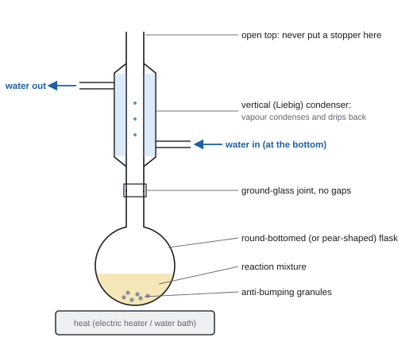
- What it does: heats a reaction mixture for a long time without losing volatile reactants or products. Vapour rises, condenses in the vertical condenser and drips back into the flask.
- When: slow reactions, and whenever you want the reaction to go to completion (e.g. a primary alcohol to a carboxylic acid: the aldehyde formed first is returned to the oxidising agent).
- Never stopper the top.
Simple distillation
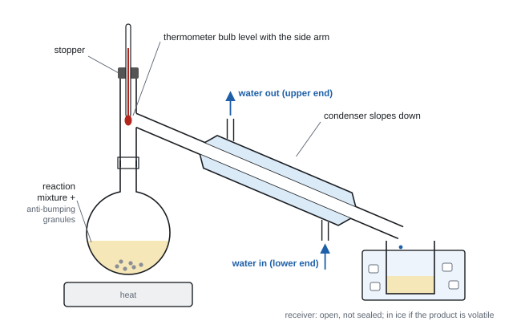
- What it does: separates a liquid from a mixture by boiling point. The vapour passes into a sloping condenser and is collected.
- Uses: to remove a product as it forms (the aldehyde in CP7); to purify a crude product, collecting only the fraction that boils within about 2 °C of the product's boiling temperature.
- Fractional distillation adds a fractionating column. It separates liquids whose boiling temperatures are close together (e.g. cyclohexene from cyclohexanol and water).
- Steam distillation: steam carries over an oil that doesn't mix with water and boils above 100 °C (e.g. extracting oils from plants).
Separating funnel: extraction and washing
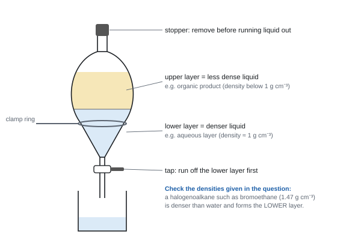
- Pour the mixture into the funnel (tap closed). Add the washing liquid, e.g. sodium hydrogencarbonate solution to remove acid.
- Stopper, invert, shake gently, and open the tap regularly to release pressure (CO₂ forms when hydrogencarbonate meets acid). Point the tip away from people.
- Stand the funnel in a clamp ring, remove the stopper, and let the layers settle.
- Run off the lower layer through the tap. Keep whichever layer holds your product. Decide which layer is which from the densities given.
- A final wash with water removes water-soluble (ionic) impurities.
Drying
- Run the organic layer into a dry conical flask and add a drying agent: an anhydrous salt such as anhydrous calcium chloride, sodium sulfate or magnesium sulfate.
- Swirl and leave until the liquid turns from cloudy to clear (add more if the solid all clumps together).
- Decant or filter off the liquid.
- Don't use anhydrous copper(II) sulfate, NaOH, KOH or concentrated H₂SO₄. Don't dry a volatile product in a warm oven, because it would evaporate.
Checking purity
- Liquid: redistil it, or measure its boiling temperature. A pure liquid boils at a fixed temperature close to the data-book value.
- Solid: measure its melting temperature (sample in a sealed capillary tube, heated slowly in a melting-point apparatus). A pure solid melts sharply, over a narrow range (about 1–2 °C), at the data-book value. Impurities lower the melting temperature and make it melt over a wider range.
Typical purification sequence for a liquid organic product (e.g. a halogenoalkane):
- separate the organic layer from the aqueous layer (separating funnel);
- wash with NaHCO₃(aq) to remove acid, releasing the pressure;
- wash with water; separate again;
- dry with an anhydrous salt; decant;
- redistil, collecting the fraction at the product's boiling temperature.
Tests for organic functional groups
| Group | Test | Positive result |
|---|---|---|
| C=C (alkene) | shake with bromine water | orange → colourless |
| C=C (alkene) | acidified potassium manganate(VII) | purple → colourless |
| –OH (alcohol or acid) | add phosphorus(V) chloride, PCl₅ (dry) | steamy (misty) fumes of HCl; turn damp blue litmus red, white smoke with NH₃ |
| –OH | add sodium | effervescence (H₂) |
| –COOH (carboxylic acid) | add sodium carbonate or sodium hydrogencarbonate | effervescence; gas turns limewater milky |
| –CHO (aldehyde) | warm with Fehling's or Benedict's solution | blue solution → red (brick-red) precipitate |
| –CHO (aldehyde) | warm with Tollens' reagent | silver mirror |
| primary or secondary alcohol, or aldehyde | warm with acidified potassium dichromate(VI) | orange → green |
| tertiary alcohol | warm with acidified potassium dichromate(VI) | stays orange |
| halogenoalkane | warm with NaOH(aq), acidify with dilute HNO₃, add AgNO₃(aq) | white / cream / yellow precipitate (Cl / Br / I) |
- PCl₅ doesn't tell an alcohol from an acid: both give fumes. Use NaHCO₃ to pick out the acid.
- Ketones give no change with Fehling's, Benedict's or Tollens'.
Infrared and mass spectra as a final check
- IR: look up the absorption ranges in the data booklet and quote the bond and the range.
- O–H in an alcohol: 3750–3200 cm⁻¹ (broad).
- O–H in a carboxylic acid: 3300–2500 cm⁻¹ (very broad).
- C=O: about 1740–1680 cm⁻¹.
- C=C: 1669–1645 cm⁻¹.
- C–H: about 2962–2853 cm⁻¹.
- An alcohol turning into a chloroalkane: the broad O–H absorption disappears (WCH13 Oct 2025).
- Mass spectrum: the molecular ion peak gives Mr. Fragment ions are positive, e.g. CH₂OH⁺ at m/z = 31 points to a primary alcohol; CH₃CO⁺ at m/z = 43. Isomers have the same molecular ion but different fragments.
- Bromine water: "orange / yellow / brown to colourless". "Clear" and "red" are not accepted.
- Fehling's / Benedict's: give the start colour (blue) and say precipitate (red / brick-red). "Red solution" isn't enough.
- PCl₅: "steamy / misty fumes". "White smoke" and "PCl₃" are not accepted.
- Acidified dichromate: "orange to green". Use sulfuric acid. HCl, HNO₃, potassium chromate(VI) and manganate(VII) were rejected as the oxidant in these questions.
- Separating funnel: "invert and open the tap / release the pressure"; "allow the layers to separate"; "run off the lower layer through the tap". Pouring or pipetting off the top layer is not credited (WCH13 Oct 2019).
- Drying: name an anhydrous salt, "swirl", "until the liquid is clear", "decant / filter".
- Distillation diagram (3 marks): heated flask with the thermometer bulb at the side arm; condenser sloping down with water in at the lower end; no gaps, and a receiver that is not sealed.
- Reflux diagram: round-bottomed or pear-shaped flask with heat; vertical condenser with water in at the bottom; open at the top.
Often asked as: draw / complete / find the errors in a distillation or reflux diagram; explain why the mixture is heated under reflux; which layer is the organic layer; why is the funnel tap opened; why is sodium hydrogencarbonate used; name a drying agent and say how you know it's dry; give a test for the functional group and its result; which IR absorption shows…
A stopper on top of the reflux condenser, or a sealed receiver: never heat a closed system.
Condenser water going in at the top.
Thermometer bulb dipping into the liquid during distillation (it must read the vapour at the side arm).
Assuming the organic layer is always on top. Halogenoalkanes such as bromoethane (1.47 g cm⁻³) are denser than water.
- Choosing a drying agent from a list: MgSO₄ is right because it is anhydrous and doesn't react. The others are hydrated, flammable (ethanol), basic (Ca(OH)₂) or a reactive acid (H₂SO₄) (WCH13 Jun 2022).
- Using NaHCO₃ rather than NaOH to remove acid: NaOH could hydrolyse the halogenoalkane product (WCH13 Jan 2025).
- Steam distillation of geraniol (insoluble in water, boils above 100 °C): collect water + oil, separate in a separating funnel, then dry the oil (WCH13 Oct 2021).
Unit 6 (A2): Transition-metal ions with NaOH(aq) and NH₃(aq)
Always say colour and state: "blue precipitate", "dark blue solution". Add the reagent drop by drop, then in excess.
| Ion and colour in water | Few drops NaOH(aq) | Excess NaOH(aq) | Few drops NH₃(aq) | Excess NH₃(aq) | Also |
|---|---|---|---|---|---|
| Cu²⁺, blue [Cu(H₂O)₆]²⁺ | blue ppt Cu(OH)₂(H₂O)₄ | no change | pale blue ppt | dissolves → deep (dark) blue solution [Cu(NH₃)₄(H₂O)₂]²⁺ | conc HCl → green then yellow [CuCl₄]²⁻ |
| Fe²⁺, pale green | green ppt Fe(OH)₂ | no change | green ppt | no change | ppt turns brown on standing (air oxidises it to Fe(OH)₃) |
| Fe³⁺, yellow / orange-brown | red-brown (orange-brown) ppt Fe(OH)₃ | no change | red-brown ppt | no change | oxidises I⁻ to I₂ |
| Cr³⁺, green (violet [Cr(H₂O)₆]³⁺) | grey-green ppt Cr(OH)₃(H₂O)₃ | dissolves → dark green solution [Cr(OH)₆]³⁻ | grey-green ppt | dissolves (slowly) → purple/violet [Cr(NH₃)₆]³⁺ | + H₂O₂ in alkali, warm → yellow CrO₄²⁻ |
| Mn²⁺, very pale (treat as colourless) | off-white / pale brown ppt Mn(OH)₂ | no change | off-white ppt | no change | ppt darkens on standing (air oxidation) |
| Co²⁺, pink [Co(H₂O)₆]²⁺ | blue ppt | no change | blue ppt | dissolves → straw / yellow-brown [Co(NH₃)₆]²⁺, darkens in air | conc HCl → blue [CoCl₄]²⁻ |
| Ni²⁺, green | green ppt | no change | green ppt | dissolves → blue-violet [Ni(NH₃)₆]²⁺ | |
| Zn²⁺, colourless | white ppt Zn(OH)₂ | dissolves → colourless [Zn(OH)₄]²⁻ | white ppt | dissolves → colourless [Zn(NH₃)₄]²⁺ | Zn is d-block but not a transition element |
Green solutions to keep apart: Fe²⁺, Cr³⁺, Ni²⁺, V³⁺. Fe²⁺ and Cr³⁺ are told apart by excess NaOH or excess NH₃: Cr(OH)₃ dissolves, Fe(OH)₂ doesn't (and goes brown).
Unit 6 (A2): Three types of reaction
| What happens | Type | Example equation |
|---|---|---|
| OH⁻ or a little NH₃ removes H⁺ from water ligands → neutral hydroxide ppt | deprotonation (acid–base) | [Cu(H₂O)₆]²⁺ + 2OH⁻ → [Cu(OH)₂(H₂O)₄] + 2H₂O |
| [Cu(H₂O)₆]²⁺ + 2NH₃ → [Cu(OH)₂(H₂O)₄] + 2NH₄⁺ | ||
| ppt dissolves in excess OH⁻ (amphoteric hydroxide) | deprotonation | [Cr(OH)₃(H₂O)₃] + 3OH⁻ → [Cr(OH)₆]³⁻ + 3H₂O |
| excess NH₃ (or Cl⁻) replaces the ligands | ligand exchange | [Cu(OH)₂(H₂O)₄] + 4NH₃ → [Cu(NH₃)₄(H₂O)₂]²⁺ + 2OH⁻ + 2H₂O |
| [Cr(H₂O)₆]³⁺ + 6NH₃ → [Cr(NH₃)₆]³⁺ + 6H₂O | ||
| [Cu(H₂O)₆]²⁺ + 4Cl⁻ ⇌ [CuCl₄]²⁻ + 6H₂O | ||
| oxidation state of the metal changes | redox | Fe(OH)₂ → Fe(OH)₃ in air; 2[Cr(OH)₆]³⁻ + 3H₂O₂ → 2CrO₄²⁻ + 2OH⁻ + 8H₂O |
The number of OH⁻ needed to make the neutral hydroxide equals the charge on the ion. Amphoteric = reacts with both acids and bases.
Unit 6 (A2): Chromium and vanadium colours
- Cr(VI): CrO₄²⁻ yellow ⇌ Cr₂O₇²⁻ orange: 2CrO₄²⁻ + 2H⁺ ⇌ Cr₂O₇²⁻ + H₂O (acid–base, not redox; Cr stays +6). Ba²⁺ + CrO₄²⁻ → yellow ppt BaCrO₄.
- Cr₂O₇²⁻/H⁺ warmed with a primary/secondary alcohol or an aldehyde: orange → green (Cr³⁺). Zinc and acid take Cr(III) on to blue Cr²⁺, which turns green again in air.
- Vanadium with zinc and acid, step by step:
| Oxidation state | Ion | Colour |
|---|---|---|
| +5 | VO₂⁺ | yellow |
| +4 | VO²⁺ | blue |
| +3 | V³⁺ | green |
| +2 | V²⁺ | violet (purple) |
The colours seen are yellow → green (yellow + blue mixture) → blue → green → violet. V²⁺ left in air goes back to green V³⁺.
Unit 6 (A2): Other cations
- Flame tests (nichrome wire dipped in conc HCl, then the solid, in a blue flame): Li⁺ red, Na⁺ yellow-orange, K⁺ lilac, Ca²⁺ orange-red (brick-red), Sr²⁺ red (crimson), Ba²⁺ (pale) green.
- Ammonium: warm with NaOH(aq) → NH₃, which turns damp red litmus blue.
Unit 6 (A2): Anion tests
| Anion | Test | Positive result |
|---|---|---|
| Cl⁻, Br⁻, I⁻ | add dilute HNO₃, then AgNO₃(aq) | Cl⁻ white ppt; Br⁻ cream ppt; I⁻ yellow ppt |
| confirm halide | add NH₃(aq) to the ppt | AgCl dissolves in dilute NH₃; AgBr dissolves only in concentrated NH₃; AgI insoluble in both |
| halides with conc H₂SO₄ (solid salt) | add conc H₂SO₄ | Cl⁻: misty (steamy) fumes of HCl; Br⁻: misty fumes + orange-brown Br₂ (+ SO₂); I⁻: purple vapour / black solid I₂, yellow S, rotten-egg H₂S |
| SO₄²⁻ | add dilute HCl (or HNO₃), then BaCl₂(aq) | white ppt BaSO₄ |
| CO₃²⁻ / HCO₃⁻ | add dilute acid; bubble gas into limewater | effervescence; limewater turns cloudy |
| NO₃⁻ (beyond spec) | warm with NaOH(aq) and aluminium | NH₃ turns damp red litmus blue |
Why the acid first? HNO₃ or HCl removes carbonate (and sulfite or hydroxide) ions that would also give a precipitate with Ag⁺ or Ba²⁺. Don't use HCl before AgNO₃ (it adds Cl⁻), or H₂SO₄ before BaCl₂ (it adds SO₄²⁻).
Unit 6 (A2): Gas tests
| Gas | Test | Result |
|---|---|---|
| H₂ | lighted splint | squeaky pop |
| O₂ | glowing splint | relights |
| CO₂ | limewater | turns cloudy (milky) |
| NH₃ | damp red litmus / conc HCl on a rod | turns blue / white smoke (NH₄Cl) |
| HCl | damp blue litmus / NH₃ on a rod | turns red / white smoke; misty fumes in moist air |
| Cl₂ | damp blue litmus | turns red, then bleached white |
| SO₂ | acidified K₂Cr₂O₇ paper | orange → green |
| H₂O | anhydrous CoCl₂ paper / anhydrous CuSO₄ | blue → pink / white → blue |
| NO₂ | look | brown gas (toxic) |
Unit 6 (A2): Organic functional-group tests
| Group | Test | Positive result | Negative / notes |
|---|---|---|---|
| C=C (alkene) | bromine water, shake | orange → colourless | alkane: no change |
| C=O (aldehyde or ketone) | Brady's reagent (2,4-DNPH) | orange/yellow precipitate; melting point of the purified derivative identifies the compound | must say "precipitate" |
| aldehyde (–CHO) | Tollens' reagent, warm | silver mirror (grey/black ppt) | ketone: no change |
| aldehyde | Fehling's or Benedict's, warm | blue solution → red (brick-red) ppt of Cu₂O | ketone: no change |
| 1° or 2° alcohol, aldehyde | acidified K₂Cr₂O₇, warm | orange → green | 3° alcohol and ketone: no change |
| CH₃CO– or CH₃CH(OH)– | iodine + NaOH(aq), warm | pale yellow ppt of CHI₃, antiseptic smell | ethanal and ethanol also positive |
| –COOH | NaHCO₃(aq) or Na₂CO₃(aq) | effervescence; gas turns limewater cloudy | alcohols, phenol: no fizz with carbonate |
| –OH (alcohol or acid) | PCl₅ | misty (steamy) fumes of HCl | can't tell alcohol from acid |
| alcohol | carboxylic acid + conc H₂SO₄, warm | sweet, fruity smell (ester) | |
| acyl chloride | add water | misty fumes (HCl); white smoke with NH₃ | |
| halogenoalkane | warm with NaOH(aq), add dilute HNO₃, then AgNO₃(aq) | white / cream / yellow ppt (Cl / Br / I) | must acidify first |
| phenol | bromine water | decolourised; white ppt (2,4,6-tribromophenol) | |
| amine | universal indicator; Cu²⁺(aq) | alkaline (blue); pale blue ppt then deep blue solution | |
| aromatic or alkene (high C:H) | burn on a spatula | smoky (sooty) flame |
Distinguishing a pair ("one chemical test"): name the reagent, then give the result for both compounds. Propan-1-ol vs propanoic acid: NaHCO₃(aq) (acid fizzes, alcohol no change). Propanal vs propanone: Tollens' (silver mirror vs no change). Pentan-2-one vs pentan-3-one: iodine/NaOH (yellow ppt vs no change).
Unit 6 (A2): Spectra and identification
- Mass spectrum: the molecular ion (highest m/z, M⁺) gives Mr. Fragments must be written as positive ions with no loose bond: CH₃⁺ 15, C₂H₅⁺ 29, CHO⁺ 29, CH₃CO⁺ 43, C₃H₇⁺ 43, COOH⁺ 45. If 43 could be CH₃CO⁺ or C₃H₇⁺, use the other data to decide.
- Infrared: quote the bond and the wavenumber range from the data booklet. Typical ranges: O–H (alcohol) 3750–3200 broad; O–H (carboxylic acid) 3300–2500 very broad; N–H 3500–3300; C=O 1750–1630 (ester 1750–1735, aldehyde/ketone and acid about 1740–1700, amide 1700–1630); C–H about 2950–2850.
- ¹³C NMR: number of peaks = number of carbon environments. Propan-2-ol has 2 (the two CH₃ carbons are equivalent).
- ¹H NMR: number of peaks = proton environments; peak areas (integration) = ratio of protons; splitting by the n + 1 rule, where n is the number of protons on adjacent carbon atoms. A triplet + quartet in a 3 : 2 ratio = CH₃CH₂–. A 9H singlet = (CH₃)₃C–. H on the carbon next to C=O appears at about 2.1–2.6 ppm.
- "Fully justify" questions: link each test result to a group, each spectrum feature to a part of the structure, then give the structure. One clear deduction per mark.
Unit 6 (A2): Redox titrations
| Titration | Key equation | Indicator and end-point | Ratio |
|---|---|---|---|
| MnO₄⁻ with Fe²⁺ | MnO₄⁻ + 8H⁺ + 5Fe²⁺ → Mn²⁺ + 5Fe³⁺ + 4H₂O | none (self-indicating): first permanent pale pink | MnO₄⁻ : Fe²⁺ = 1 : 5 |
| MnO₄⁻ with ethanedioate | 2MnO₄⁻ + 16H⁺ + 5C₂O₄²⁻ → 2Mn²⁺ + 10CO₂ + 8H₂O | permanent pale pink; warm to ~60 °C at the start | MnO₄⁻ : C₂O₄²⁻ = 2 : 5 |
| iodine with thiosulfate | I₂ + 2S₂O₃²⁻ → 2I⁻ + S₄O₆²⁻ | starch added when pale yellow (straw): blue-black → colourless | I₂ : S₂O₃²⁻ = 1 : 2 |
| Cu²⁺ (e.g. brass) via iodine | 2Cu²⁺ + 4I⁻ → 2CuI + I₂ | as above | Cu²⁺ : S₂O₃²⁻ = 1 : 1 |
Manganate(VII) rules:
- KMnO₄ goes in the burette (read the top of the meniscus if it is too dark to see the bottom).
- Acidify with excess dilute H₂SO₄. Not HCl: MnO₄⁻ oxidises Cl⁻ to Cl₂, so the titre is too big. Not HNO₃: it is an oxidising agent and would oxidise Fe²⁺ itself. Too little acid gives a brown precipitate of MnO₂.
- With ethanedioate the reaction starts slowly (two negative ions repel), so warm to about 60 °C. Once started it speeds up because the Mn²⁺ formed catalyses it (autocatalysis).
Iodine–thiosulfate rules:
- The oxidising agent is added to excess KI, releasing I₂; the I₂ is titrated with thiosulfate.
- Add starch near the end-point (pale yellow). If added at the start, a lot of iodine binds to the starch and the end-point is hard to see.
- For brass/copper, neutralise the nitric acid first (Na₂CO₃ until a faint ppt, then a little ethanoic acid) so it can't oxidise I⁻.
Back titration: add a known excess of reagent, let it react, then titrate what is left. Amount reacted = amount added − amount left. Used when the substance is insoluble, volatile (NH₃) or reacts slowly.
Worked example: MnO₄⁻ titration (purity of iron(II) sulfate)
3.20 g of impure FeSO₄·7H₂O (Mr 277.9) is dissolved and made up to 250.0 cm³. 25.0 cm³ portions are acidified with dilute H₂SO₄ and titrated with 0.0100 mol dm⁻³ KMnO₄. Titres: rough 23.10, then 22.45, 22.35, 22.85 cm³.
Concordant titres: 22.45 and 22.35 (22.85 is not within 0.20 cm³). Mean = 22.40 cm³
n(MnO₄⁻) = 0.0100 × 22.40/1000 = 2.240 × 10⁻⁴ mol
n(Fe²⁺) in 25.0 cm³ = 5 × 2.240 × 10⁻⁴ = 1.120 × 10⁻³ mol
n(Fe²⁺) in 250.0 cm³ = 1.120 × 10⁻² mol (×10)
mass FeSO₄·7H₂O = 1.120 × 10⁻² × 277.9 = 3.112 g
% purity = 3.112 ÷ 3.20 × 100 = 97.3 %
Worked example: water of crystallisation by MnO₄⁻ titration
1.26 g of H₂C₂O₄·xH₂O is made up to 250.0 cm³. 25.0 cm³ portions, acidified and warmed to 60 °C, need a mean titre of 20.00 cm³ of 0.0200 mol dm⁻³ KMnO₄.
n(MnO₄⁻) = 0.0200 × 20.00/1000 = 4.00 × 10⁻⁴ mol
n(C₂O₄²⁻) = 4.00 × 10⁻⁴ × 5/2 = 1.00 × 10⁻³ mol in 25.0 cm³ → 1.00 × 10⁻² mol in 250.0 cm³
Mr of hydrate = 1.26 ÷ 1.00 × 10⁻² = 126
H₂C₂O₄ = 90.0, so water = 126 − 90.0 = 36.0 → x = 36.0 ÷ 18.0 = 2
Worked example: back titration (ammonium sulfate in a fertiliser)
2.50 g of fertiliser is boiled with 50.0 cm³ of 1.00 mol dm⁻³ NaOH (excess) until no more NH₃ is given off. The cooled solution is made up to 250.0 cm³. 25.0 cm³ portions need a mean titre of 20.40 cm³ of 0.100 mol dm⁻³ HCl.
NH₄⁺ + OH⁻ → NH₃ + H₂O, so (NH₄)₂SO₄ : NaOH = 1 : 2
NaOH added = 1.00 × 50.0/1000 = 0.0500 mol
NaOH left in 25.0 cm³ = n(HCl) = 0.100 × 20.40/1000 = 2.040 × 10⁻³ mol → in 250.0 cm³ = 2.040 × 10⁻² mol
NaOH that reacted = 0.0500 − 0.0204 = 0.0296 mol = n(NH₄⁺)
n((NH₄)₂SO₄) = 0.0296 ÷ 2 = 0.0148 mol; mass = 0.0148 × 132.1 = 1.955 g
% = 1.955 ÷ 2.50 × 100 = 78.2 %
Known slips the mark scheme checks for: forgetting ÷2, forgetting ×10, or using the NaOH left instead of the NaOH that reacted.
Unit 6 (A2): Organic preparation and purification
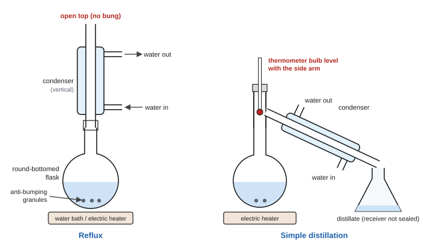
Reflux: heating a reaction mixture for a long time with a vertical condenser, so vapour condenses and runs back into the flask.
- Why: heating increases the rate so the reaction goes to completion, and the condenser stops volatile (flammable, toxic) reactants or products escaping. With acidified dichromate it keeps the intermediate aldehyde in the flask so it is oxidised all the way to the carboxylic acid.
- Diagram marks: round-bottomed (or pear-shaped) flask with liquid in it; heat source; vertical condenser; water in at the bottom, out at the top; open top; flask and condenser drawn as two pieces joined with no gap; anti-bumping granules.
- Errors you may be asked to spot: a sealed top (pressure builds up, it could explode); water flowing the wrong way (condenser doesn't fill, so less effective); a conical flask; no anti-bumping granules (violent, uneven boiling); a Bunsen with a flammable mixture. A thermometer is not an error unless it seals the top.
Distillation: separates a liquid by its boiling temperature.
- Thermometer bulb level with the entrance to the side arm (it measures the temperature of the vapour that is distilling). Collect the fraction that distils over a narrow range around the boiling point of the product (e.g. within 2 °C).
- Condenser sloping down, water in at the lower end. Receiver open to the air (never a sealed system).
- Distilling as it forms (no reflux) collects the aldehyde from the oxidation of a primary alcohol before it can be oxidised further.
Steam distillation: steam is passed through a mixture containing an immiscible, heat-sensitive organic liquid (e.g. limonene from orange peel, phenylamine from a reaction mixture). The mixture distils below 100 °C, so the product distils without decomposing at its own high boiling point. The distillate is cloudy (an emulsion of oil in water).
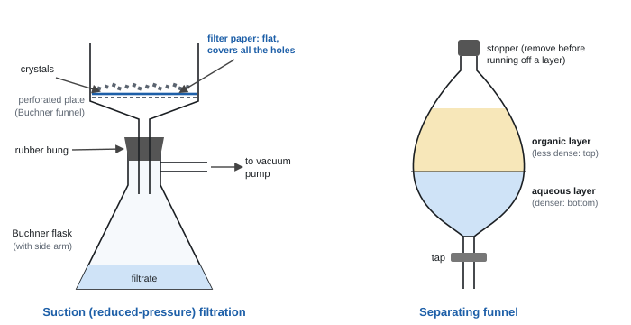
Separating funnel (washing and solvent extraction)
- Add the wash (water, Na₂CO₃(aq) or NaHCO₃(aq)) or the extracting solvent; stopper, invert and shake, opening the tap regularly to release pressure; clamp and let the layers separate; remove the stopper; run off the lower layer.
- Which layer is which: the less dense liquid is on top. Most organic liquids (density below 1 g cm⁻³) are on top; halogenated ones are below. Test by adding a few drops of water and seeing which layer gets bigger.
- Na₂CO₃ / NaHCO₃ wash: removes acid (unreacted carboxylic acid, the acid catalyst, HCl). It gives off CO₂ (H⁺ + HCO₃⁻ → H₂O + CO₂), which is why the pressure must be released.
- Water wash: removes soluble impurities such as salts, acids, alcohols.
- Solvent extraction: the product is more soluble in an immiscible organic solvent (e.g. ether) than in water, so it moves into the organic layer. Several small extractions remove more than one big one. Remove the ether by distillation using a hot water bath (very flammable, no flame).
- Salting out: adding NaCl to the aqueous layer makes the organic compound less soluble in it.
Drying a liquid: add an anhydrous drying agent (anhydrous MgSO₄, Na₂SO₄, CaCl₂), swirl, and keep adding until the liquid is clear (no longer cloudy) and the solid stays free-flowing rather than clumping. Then filter or decant. Drying agents that are not accepted: anhydrous CuSO₄, CoCl₂, conc H₂SO₄.
Recrystallisation (asked almost every year)
- Dissolve the impure solid in the minimum volume of hot solvent: the solution will be saturated on cooling, so most of the product crystallises out. (Don't heat above the solid's melting point.)
- Filter while hot (pre-warmed funnel) to remove insoluble impurities. Hot, so crystals don't form in the funnel.
- Cool the filtrate (then in an ice bath) so the product crystallises. Soluble impurities stay in solution because they are present in small amounts.
- Filter under reduced pressure (Buchner) to collect the crystals.
- Wash with a small volume of ice-cold solvent, to remove the solution of soluble impurities from the crystals without dissolving them.
- Dry: on filter paper, in a desiccator, or in a warm (not hot) oven.
A good recrystallisation solvent dissolves the compound well when hot and poorly when cold, and doesn't react with it.
Suction (reduced-pressure) filtration: Buchner funnel with a perforated plate, flat filter paper covering all the holes, sealed with a bung into a Buchner flask with a side arm connected to a vacuum pump. It is faster than gravity filtration and gives a drier product.
Melting temperature: a small amount of dry, powdered sample in a capillary tube sealed at one end, held next to the thermometer bulb in an oil bath (Thiele tube) or a melting-point apparatus; heat slowly near the melting point; record the range. Pure: sharp and matching the data-book value. Impure: lower and wider range.
Boiling temperature: distil and read the thermometer (bulb at the side arm) while the liquid distils steadily; or use a Thiele tube with an inverted capillary. Atmospheric pressure affects it.
Temperature control in preparations
| Preparation | Condition | Why |
|---|---|---|
| nitration of an arene (e.g. methyl benzoate) | keep below about 10–15 °C; add the nitrating mixture slowly with an ice bath | exothermic; higher temperature gives dinitration and other isomers |
| diazotisation (phenylamine + HNO₂) | keep cold, above 0 °C but no higher than about 5–10 °C | above it the diazonium ion decomposes (to a phenol + N₂); below 0 °C too slow / water freezes. HNO₂ is made in situ (NaNO₂ + HCl) because it is unstable |
| aspirin, acylation | cool when mixing | mixing is exothermic |
| flammable solvent | hot water bath or electric heater | no naked flame |
Reagent roles: conc H₂SO₄ in esterification and aspirin = catalyst. Tin with conc HCl in reducing nitrobenzene = reducing agent. Excess of one reagent pushes an equilibrium (or ensures the limiting reagent fully reacts); prove which is in excess by comparing moles.
Unit 6 (A2)
- Ion tests: colour and "precipitate" or "solution"; "dark/deep blue solution" (not just blue) for copper with excess NH₃; "off-white" Mn(OH)₂ that "darkens"; "green ppt turns brown on standing" for Fe²⁺.
- Type of reaction: "deprotonation (acid–base)" for NaOH; "ligand exchange (substitution)" for excess NH₃; "redox" when the oxidation number changes.
- Halides: "add dilute nitric acid, then silver nitrate"; "white ppt soluble in dilute ammonia". Sulfate: "acidify with dilute HCl, then BaCl₂: white ppt".
- Organic: "orange precipitate" with Brady's; "silver mirror"; "red precipitate" with Fehling's; "no change" (not "no observation") for a negative; aldehyde group written –CHO.
- Titrations: "permanent pale pink"; starch "near the end-point (straw/pale yellow)"; "blue-black to colourless"; "dilute sulfuric acid in excess".
- Reflux: "heat to increase the rate" + "condenser prevents loss of volatile reactants/products". Recrystallisation: "minimum volume of hot solvent", "filter hot to remove insoluble impurities", "wash with cold solvent". Suction filtration: "faster" and "drier". Drying: "add until the liquid is clear" / "solid no longer clumps".
Often asked as: identify ions A–D from a table of observations; complete observation/inference cells; state the type of reaction; write the formula of a complex; choose one test to distinguish a pair; deduce a structure from tests plus IR, MS and NMR; why starch is added late; why H₂SO₄ and not HCl; spot three errors in a reflux or filtration diagram; why a sodium carbonate wash; describe recrystallisation and say what each step removes.
Unit 6 (A2)
Writing a colour without "precipitate" or "solution". "Blue" instead of "dark blue" for [Cu(NH₃)₄(H₂O)₂]²⁺.
Calling the reaction of NaOH with an aqua ion "ligand exchange". It is deprotonation.
Hexaammine copper [Cu(NH₃)₆]²⁺, or [Zn(NH₃)₆]²⁺ and [Co(NH₃)₄]²⁺: copper and zinc take four NH₃, cobalt takes six.
Giving "pale pink" for Mn²⁺(aq): treat it as colourless. Confusing off-white Mn(OH)₂ with red-brown Fe(OH)₃.
Mixing the tests: HCl before AgNO₃, or H₂SO₄ before BaCl₂.
PCl₅ or sodium to tell an alcohol from a carboxylic acid: both react. Use NaHCO₃.
Fragment ions with no + charge, a negative charge, or a dangling bond.
"Copper(II) oxide" for Fehling's: the red ppt is copper(I) oxide.
Reflux diagrams with a bung in the top, or water entering at the top.
Unit 6 (A2)
- Silver halide ppt filtered off before testing with ammonia, because a coloured metal hydroxide (e.g. green Fe(OH)₂) would also form and hide the result (WCH16 Jan 2023).
- Feasibility vs E⦵: Cu²⁺ oxidising I⁻ looks unfeasible from E⦵ values (E⦵cell = −0.39 V), but it happens because CuI precipitates, removing Cu⁺ and raising E for Cu²⁺/Cu⁺ (WCH16 Jun 2022).
- Salting out with NaCl, and the cloudy steam distillate, in making phenylamine (WCH16 Jan 2022).
- Thermometer bulb level with the side arm and a pear-shaped (not conical) flask for distillation (WCH16 Oct 2021).
- A solid product can't be dried with a solid drying agent: you couldn't separate them. Dry it in a desiccator instead (WCH16 Jun 2023).
- Lone pair on oxygen delocalised into the ring explains why phenol brominates without a halogen carrier (WCH16 Jan 2025).
SpecCP1Measuring the molar volume of a gas
Unit 1 core practical (1.11): measure the volume of gas produced from a known amount of a reactant, and use it to find the volume occupied by one mole of gas.
The idea
- React a known mass of a solid that is the limiting reagent with an excess of acid (or water), collect all the gas, and measure its volume.
- Moles of gas come from the equation. Then:
- The expected value is about 24.0 dm³ mol⁻¹ (24 000 cm³ mol⁻¹) at room temperature and pressure.
- Common reactions:
- Mg(s) + 2HCl(aq) → MgCl₂(aq) + H₂(g)
- CaCO₃(s) + 2HCl(aq) → CaCl₂(aq) + H₂O(l) + CO₂(g)
- Ca(s) + 2H₂O(l) → Ca(OH)₂(aq) + H₂(g)
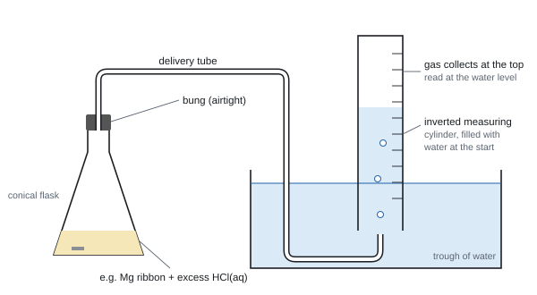
Core practical 1: method in brief
- Clean a strip of magnesium ribbon with emery paper (removes the oxide coating). Weigh about 0.04–0.05 g of it on a 3 d.p. balance.
- Measure 50 cm³ of 1.0 mol dm⁻³ hydrochloric acid (an excess) into a conical flask.
- Fill a 100 cm³ measuring cylinder with water and turn it upside down in a trough of water (or connect a 100 cm³ gas syringe). Put the delivery tube under its mouth.
- Drop the magnesium into the acid and immediately put the bung in.
- When no more bubbles form, read the gas volume.
- Repeat with different masses. Plot volume against mass for a line through the origin.
Variables and safety
- IV: mass of solid (if you plot a graph). DV: volume of gas.
- Control: volume and concentration of acid (always in excess), temperature and pressure (room), same apparatus.
- Safety: hydrogen is flammable, so no flames nearby. Dilute HCl is an irritant. Calcium reacts with water to give an alkaline (irritant) solution.
Processing the results
Worked example: molar volume from magnesium
0.0480 g of Mg gives 46.5 cm³ of hydrogen.
- n(Mg) = 0.0480 ÷ 24.3 = 1.975 × 10⁻³ mol
- Mg : H₂ = 1 : 1, so n(H₂) = 1.975 × 10⁻³ mol
- molar volume = 46.5 ÷ 1.975 × 10⁻³ = 23 500 cm³ mol⁻¹ = 23.5 dm³ mol⁻¹
Check the acid is in excess: n(HCl) = 1.0 × 50 ÷ 1000 = 0.050 mol. Only 2 × 1.975 × 10⁻³ = 0.00395 mol is needed. ✓
Mass uncertainty: one reading on a 3 d.p. balance (±0.0005 g) gives 0.0005 ÷ 0.0480 × 100 = 1.0%. On a 2 d.p. balance (±0.005 g) it would be about 10%, which is far too big.
Worked example: identify a Group 2 carbonate from the gas volume
0.250 g of MCO₃ gives 70.0 cm³ of CO₂ with acid. Molar volume = 24.0 dm³ mol⁻¹.
- n(CO₂) = 70.0 ÷ 24 000 = 2.917 × 10⁻³ mol = n(MCO₃)
- Mr(MCO₃) = 0.250 ÷ 2.917 × 10⁻³ = 85.7
- Ar(M) = 85.7 − 60.0 = 25.7 → nearest Group 2 metal is magnesium (24.3)
- Graph method: plot volume of CO₂ against mass of CaCO₃. Draw a best-fit straight line through the origin. Gradient = volume per gram; multiply by M(CaCO₃) = 100.1 to get the molar volume. (Use M of the carbonate, not of CO₂.)
Sources of error and improvements
| Error | Effect on molar volume | Improvement |
|---|---|---|
| gas escapes before the bung goes in | too low | put the solid in a small tube inside the flask, seal, then tip it over; or use a weaker acid (e.g. ethanoic acid) so the reaction starts more slowly |
| CO₂ dissolves in the water | too low | use a gas syringe |
| oxide coating on Mg (fewer moles of Mg react) | too low | clean with emery paper |
| very small mass → large % uncertainty | random scatter | use a 3 d.p. balance; use more solid if the syringe or cylinder can hold the gas |
| room temperature and pressure aren't those of the 24.0 value | small difference | measure T and p; use pV = nRT |
| syringe plunger sticks | too low | twist the plunger gently |
- Weigh by difference ("weighing bottle before and after") to allow for solid left behind (WCH13 Oct 2023).
- Ethanoic acid instead of HCl: "ethanoic acid is weak, so the reaction is slower" and "less gas escapes before the bung is replaced".
- Gas syringe over collecting over water: no CO₂ dissolves; finer graduations. The acid can be tipped onto the solid after sealing.
- Too-low result: "gas escaped before the bung was replaced", "gas dissolved in the water", "the metal had an oxide coating".
- Molar volume units: dm³ mol⁻¹ or cm³ mol⁻¹.
- Using a larger mass: "would reduce the percentage uncertainty" but "would produce more gas than the measuring cylinder / burette can hold" (WCH13 Jan 2021).
Often asked as: draw the gas-collection apparatus (boiling tube or flask, bung, delivery tube into an inverted water-filled cylinder in a trough); calculate the molar volume; identify the metal; explain why the value is lower than 24.0 dm³ mol⁻¹; plot volume against mass and use the gradient.
Using the Mr of CO₂ (44.0) instead of the Mr of the carbonate when working out moles from the mass of solid.
Giving molar volume in mol dm⁻³.
Forgetting to subtract 60.0 for CO₃ when finding Ar of the metal, or picking a metal from the wrong group.
- Calcium and water: you see bubbles, the calcium disappears, and the solution goes cloudy (white Ca(OH)₂, only slightly soluble). Not "coloured products" (WCH13 Jun 2023).
- A result above 24.0 dm³ mol⁻¹ (e.g. 28.8 dm³ mol⁻¹ from Mg in an inverted burette) can't be blamed on an MgO impurity, which would make the result lower (WCH13 Jan 2025).
- Heating a Group 2 carbonate and collecting the CO₂: take the delivery tube out of the water before stopping heating, to prevent suck-back (WCH13 Jan 2021).
SpecCP2Enthalpy change of a reaction using Hess's law
Unit 2 core practical (6.7): measure the enthalpy changes of two reactions you can do in a polystyrene cup, then combine them in a Hess cycle to get the enthalpy change of a reaction you can't measure directly. Evaluate the results, including heat loss, assumptions and cooling corrections (6.8).
The idea
- Some enthalpy changes can't be measured directly. Thermal decomposition needs strong heating and you can't measure the temperature change; hydrating anhydrous CuSO₄ exactly can't be controlled.
- Instead, react each substance with an excess of acid in an insulated cup. These reactions are quick and happen in solution, so ΔT can be measured. Hess's law then links them.
- The usual school version: the decomposition of potassium hydrogencarbonate.
2KHCO₃(s) → K₂CO₃(s) + H₂O(l) + CO₂(g)
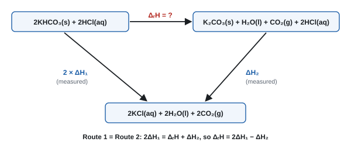
Core practical 2: method in brief
- Measure 30.0 cm³ of 2.0 mol dm⁻³ HCl (an excess) into a polystyrene cup standing in a beaker.
- Weigh about 3.0 g of KHCO₃ in a weighing bottle.
- Record the temperature of the acid every 30 s for a few minutes to get a steady starting value.
- Tip in the solid at a recorded time, stir, and put the lid on. Keep reading the temperature every 30 s for several more minutes.
- Reweigh the bottle (mass added = by difference).
- Repeat the whole thing with about 3.0 g of K₂CO₃.
The calorimetry equations
- Q = energy transferred (J). m = mass of solution in g (volume in cm³, taking the density as 1.00 g cm⁻³; ignore the mass of the solid). c = 4.18 J g⁻¹ K⁻¹. ΔT = temperature change (°C = K for a change).
- n = moles of the limiting reagent (the one not in excess).
- Sign: temperature rises → exothermic → ΔH negative. Temperature falls → endothermic → ΔH positive.
- Divide J by 1000 to get kJ.
Correcting for heat loss: the temperature–time graph
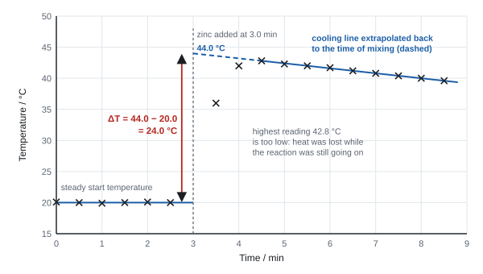
- The reaction isn't instantaneous, and the mixture loses heat while it is still reacting. So the highest reading is lower than the true maximum.
- Draw a best-fit line through the steady readings before mixing, and another through the cooling readings after the peak. Extrapolate the cooling line back to the time of mixing. ΔT is the vertical gap between the two lines at that time.
- No reading is taken at the moment of mixing: the solid is being added, so the temperature is neither that of the starting solution nor that of the products.
- For an endothermic reaction the graph is upside down: extrapolate the warming line back to find the lowest temperature.
Worked example: ΔH from the graph
50.0 cm³ of 0.500 mol dm⁻³ CuSO₄ with excess zinc (3.00 g). From the graph ΔT = 24.0 °C.
Zn(s) + CuSO₄(aq) → ZnSO₄(aq) + Cu(s)
- Zinc is in excess: n(Zn) = 3.00 ÷ 65.4 = 0.0459 mol; n(CuSO₄) = 0.500 × 50.0 ÷ 1000 = 0.0250 mol, the limiting reagent.
- Q = 50.0 × 4.18 × 24.0 = 5016 J = 5.016 kJ (m = 50.0 g of solution, not the zinc)
- ΔH = −5.016 ÷ 0.0250 = −201 kJ mol⁻¹ (sign, unit, 3 s.f.)
Using the highest reading instead (42.8 − 20.0 = 22.8 °C) would give a value that is even less exothermic.
Worked example: the Hess's law result
Reaction 1: 3.00 g KHCO₃ (M = 100.1) in 30.0 cm³ acid; temperature falls by 7.0 °C.
n = 3.00 ÷ 100.1 = 0.02997 mol; Q = 30.0 × 4.18 × 7.0 = 877.8 J
ΔH₁ = +0.8778 ÷ 0.02997 = +29.3 kJ mol⁻¹ (endothermic)
Reaction 2: 3.00 g K₂CO₃ (M = 138.2) in 30.0 cm³ acid; temperature rises by 5.5 °C.
n = 3.00 ÷ 138.2 = 0.02171 mol; Q = 30.0 × 4.18 × 5.5 = 689.7 J
ΔH₂ = −0.6897 ÷ 0.02171 = −31.8 kJ mol⁻¹ (exothermic)
Cycle: ΔᵣH = 2ΔH₁ − ΔH₂ = 2(+29.3) − (−31.8) = +90.4 kJ mol⁻¹
The value calculated from standard enthalpies of formation is about +96 kJ mol⁻¹, so this result is about 6% low.
Note the small ΔT values: (2 × 0.1) ÷ 5.5 × 100 = 3.6% uncertainty for reaction 2. More solid, or less acid, would give larger temperature changes.
Combustion of an alcohol (spirit burner)
Measuring an enthalpy change of combustion
- Measure 100 cm³ of water into a copper can (a calorimeter) clamped above a spirit burner. Record the water's temperature.
- Weigh the spirit burner with its cap on (stops the alcohol evaporating).
- Light it, with a draught shield round it, and stir the water. Heat until the temperature has risen by about 20–30 °C.
- Put out the flame, record the highest temperature, put the cap back on and reweigh the burner straight away.
Worked example: ΔcH of ethanol
100 g of water rises by 25.0 °C when 0.520 g of ethanol (M = 46.0) burns.
Q = 100 × 4.18 × 25.0 = 10 450 J = 10.45 kJ
n = 0.520 ÷ 46.0 = 0.01130 mol
ΔcH = −10.45 ÷ 0.01130 = −924 kJ mol⁻¹
Here m is the mass of water, not the mass of ethanol. The data-book value is −1367 kJ mol⁻¹. For the percentage error and what it shows, see P4.
Uncertainty: ΔT (2 × 0.5) ÷ 25.0 × 100 = 4.0%; mass (2 × 0.005) ÷ 0.520 × 100 = 1.9%; total about 6%.
Errors, assumptions and improvements
- Solution reactions come out less exothermic than data-book values mainly because of heat loss. Fixes: lid, insulation, extrapolation. The assumptions also add small errors:
- density of the solution = 1.00 g cm⁻³;
- c of the solution = 4.18 J g⁻¹ K⁻¹;
- the mass of solid is ignored;
- the cup absorbs no heat;
- the reaction is complete.
- Combustion comes out far less exothermic:
- heat lost to the air and used to warm the can and the clamp;
- incomplete combustion (soot on the can);
- alcohol evaporates from the wick;
- a delay before putting the flame out or reweighing.
- Combustion fixes: draught shield, flame close to a copper can, lid on the burner, stirring. A sealed apparatus with an oxygen supply and a copper coil gives complete combustion and better heat transfer.
- Results aren't standard values, because the conditions and concentrations aren't standard.
- Excess reagent: "to make sure all the HCl reacts / is used up". "So the reaction goes to completion" was not credited (WCH13 Oct 2020).
- Stirring (dissolving): "so the solid dissolves" and "so the temperature is uniform".
- Readings before mixing: "to find a steady / average starting temperature".
- Extrapolation: the best-fit line "allows for cooling while the reaction was happening", because the reaction is not instantaneous.
- Answer: sign + value + kJ mol⁻¹, 2 or 3 s.f. (e.g. "−201 kJ mol⁻¹").
- Glass instead of polystyrene: "less exothermic" and "more heat lost / glass conducts heat".
- Combustion measurements: "mass of burner before and after", "volume / mass of water", "initial and final temperature".
Often asked as: plot the temperature–time graph and extrapolate to find ΔT; calculate ΔH with sign and units; show which reagent is in excess; construct the Hess cycle and calculate ΔH; give two assumptions; explain why the value is less exothermic than the data book; suggest improvements.
Using the mass of the solid in Q = mcΔT.
Taking ΔT as highest minus lowest reading instead of extrapolating to the time of mixing.
Leaving out the sign, or writing "+" for an exothermic reaction.
Saying the value is "smaller" when you mean less exothermic (less negative).
Saying a lid prevents heat loss; it reduces it.
- Thermometric titration: add acid to alkali in portions and record the temperature. Draw two best-fit lines (rising, then falling); where they cross is the end-point volume. This gives the concentration and ΔneutH. The total volume of both solutions is the mass in Q = mcΔT (WCH13 Oct 2024).
- Hydration of CuSO₄ by Hess's law: dissolve anhydrous and hydrated CuSO₄ separately. ΔhydH = ΔH(anhydrous) − ΔH(hydrated), e.g. −39.0 − (+5.6) = −44.6 kJ mol⁻¹ (WCH13 Oct 2021).
- Endothermic dissolving (NH₄Cl): extrapolate the warming line back to the time of mixing to find the lowest temperature; ΔH is positive (WCH13 Jan 2022).
- H₂SO₄ + NaOH: divide by the moles of NaOH (or of water formed), because 2NaOH react with 1H₂SO₄ (WCH13 Jun 2024).
SpecCP3Finding the concentration of a solution of hydrochloric acid
Unit 2 core practical (8.21): titrate hydrochloric acid against a standard alkali or carbonate to find its concentration, and minimise the measurement uncertainty (8.22).
The idea
- Pipette a known volume of a standard solution (accurately known concentration), e.g. sodium carbonate or sodium hydroxide, into a flask. Titrate it with the HCl from a burette.
- Use the mole ratio in the equation to get moles of HCl, then c = n ÷ V.
- With sodium carbonate use methyl orange (weak base): end-point yellow → orange. With NaOH, either indicator works.
Core practical 3: method in brief
- Rinse and fill a burette with the hydrochloric acid.
- Pipette 25.0 cm³ of standard 0.0500 mol dm⁻³ Na₂CO₃ into a conical flask; add 2–3 drops of methyl orange.
- Do a rough titration, then accurate titrations: add acid dropwise near the end-point, swirling, until the solution just turns orange.
- Repeat until concordant (within 0.20 cm³) and calculate the mean of the concordant titres.
(Full technique and the reason for each step: P5, titration technique.)
Variables, safety and uncertainty
- Not a variables experiment. "Control" means technique: same pipette, same indicator volume, same end-point colour.
- Safety: dilute HCl and Na₂CO₃ are irritants; wear eye protection. Fill the burette below eye level, using a funnel, then remove the funnel.
- Minimising uncertainty (8.22):
- Choose concentrations that give a titre of about 20–25 cm³ (a bigger titre has a smaller % uncertainty).
- Use a pipette and a volumetric flask rather than measuring cylinders.
- Read to ±0.05 cm³ at eye level.
- Use concordant titres.
- The overall uncertainty is about the sum of the pipette, burette (and flask, balance) percentage uncertainties.
Worked example: concentration of HCl
25.0 cm³ of 0.0500 mol dm⁻³ Na₂CO₃ needs a mean titre of 24.15 cm³ of HCl (the titration table is in P5).
Na₂CO₃(aq) + 2HCl(aq) → 2NaCl(aq) + H₂O(l) + CO₂(g)
- n(Na₂CO₃) = 0.0500 × 25.0 ÷ 1000 = 1.25 × 10⁻³ mol
- n(HCl) = 2 × 1.25 × 10⁻³ = 2.50 × 10⁻³ mol
- c(HCl) = 2.50 × 10⁻³ ÷ (24.15 ÷ 1000) = 0.104 mol dm⁻³
- In g dm⁻³: 0.1035 × 36.5 = 3.78 g dm⁻³
Titre uncertainty: (2 × 0.05) ÷ 24.15 × 100 = 0.41%.
Worked example: water of crystallisation
3.58 g of Na₂CO₃·nH₂O is made up to 250.0 cm³. 25.0 cm³ portions need 25.00 cm³ of 0.100 mol dm⁻³ HCl.
- n(HCl) = 0.100 × 25.00 ÷ 1000 = 2.50 × 10⁻³ mol
- n(Na₂CO₃) in 25.0 cm³ = 1.25 × 10⁻³ mol; in 250.0 cm³ = 1.25 × 10⁻² mol
- Mr(Na₂CO₃·nH₂O) = 3.58 ÷ 1.25 × 10⁻² = 286.4
- 286.4 − 106.0 = 180.4 = mass of water per mole; n = 180.4 ÷ 18.0 = 10
- Procedure: "pipette 25.0 cm³ of the standard solution into a conical flask", "add a few drops of methyl orange", "run in acid until just before the rough end-point", "add dropwise, swirling, until the colour just changes", "repeat until concordant".
- Methyl orange: "yellow to orange". Red or pink is not accepted.
- Ratio: Na₂CO₃ : HCl = 1 : 2; Ba(OH)₂ or Ca(OH)₂ : HCl = 1 : 2; NaOH : HCl = 1 : 1.
- Purity and formula questions: scale up from 25.0 to 250.0 cm³ (× 10) before finding the mass.
Often asked as: complete and process the titration table; state the colour change; calculate the concentration of the acid; calculate the purity of the base, the Ar of M in M₂CO₃, or the value of n; calculate the percentage uncertainty in the titre.
Using 1 : 1 for Na₂CO₃ and HCl.
Missing the × 10 scale-up from 25.0 cm³ to 250.0 cm³.
Averaging all the titres, including the rough one.
- Back-titration of an antacid: excess H₂SO₄ is added, and the acid left over is titrated with NaOH. Use the NaOH concentration, not the acid's, in the step for moles of NaOH (WCH13 Oct 2022).
- Saturated limewater or Ba(OH)₂ is already dilute, so it is titrated directly with dilute HCl and methyl orange (WCH13 Jun 2023).
SpecCP4Making a standard solution and standardising sodium hydroxide
Unit 2 core practical (8.23): make up a standard solution of a solid acid in a volumetric flask, then titrate it to find the concentration of a sodium hydroxide solution.
The idea
- NaOH can't be weighed accurately (it absorbs water and CO₂ from the air), so its solution has to be standardised against a primary standard: a pure, stable solid acid such as ethanedioic acid dihydrate, H₂C₂O₄·2H₂O (M = 126.0).
- A standard solution is a solution of accurately known concentration.
- Weak acid + strong base → phenolphthalein.
Core practical 4: method in brief
Making 250.0 cm³ of the standard solution
- Calculate the mass needed. For 0.0500 mol dm⁻³: n = 0.0500 × 0.2500 = 0.0125 mol; mass = 0.0125 × 126.0 = 1.58 g.
- Weigh the solid in a weighing bottle. Tip it into a beaker and reweigh the bottle (mass by difference).
- Dissolve in a small volume (less than 250 cm³) of distilled / deionised water, stirring.
- Pour through a funnel into a 250.0 cm³ volumetric flask. Rinse the beaker, rod and funnel with distilled water and add the washings to the flask.
- Add distilled water until the bottom of the meniscus is on the mark (dropwise near the end, eye level).
- Stopper and invert several times to mix.
Standardising the NaOH
- Pipette 25.0 cm³ of the acid into a conical flask; add phenolphthalein.
- Titrate with NaOH from the burette until the solution turns (pale) pink that stays. Repeat until concordant.
Safety
- Ethanedioic acid is harmful / toxic if swallowed and an irritant: gloves, no dust.
- NaOH solution is an irritant (corrosive when concentrated): eye protection, burette below eye level.
Worked example: from the weighing to the NaOH concentration
Weighing: bottle + acid 12.84 g; bottle after tipping 11.27 g → mass = 1.57 g.
c(acid) = (1.57 ÷ 126.0) ÷ 0.2500 = 0.0498 mol dm⁻³
Titration: 25.0 cm³ of the acid needs a mean titre of 23.80 cm³ of NaOH.
H₂C₂O₄(aq) + 2NaOH(aq) → Na₂C₂O₄(aq) + 2H₂O(l)
- n(acid) = 0.04984 × 25.0 ÷ 1000 = 1.246 × 10⁻³ mol
- n(NaOH) = 2 × 1.246 × 10⁻³ = 2.492 × 10⁻³ mol
- c(NaOH) = 2.492 × 10⁻³ ÷ (23.80 ÷ 1000) = 0.105 mol dm⁻³
Overall uncertainty about 1.3% (worked out in P4), so c(NaOH) = 0.105 ± 0.001 mol dm⁻³.
Sources of error
- Solid left in the beaker or funnel (not rinsed in) → concentration too low.
- Overshooting the mark on the flask: the solution is too dilute. Start again; you can't remove water.
- Not inverting → the solution isn't uniform, so the titres aren't concordant.
- A hydrated acid that has lost some water of crystallisation → more moles per gram than calculated.
- Old NaOH: water evaporates (more concentrated) or it absorbs CO₂ (becomes partly carbonate), so the end-point is less sharp.
- Standard solution, 4 marks (WCH13 Oct 2019):
- M1 "dissolve in distilled / deionised water in a beaker";
- M2 "use a volumetric flask";
- M3 "add the washings and make up to the mark with distilled water";
- M4 "invert / shake to mix" (only if M3 was given).
- In the 6-mark version, the first two marks are the M and mass calculation (M = 126, mass = 0.630 g for 100 cm³ of 0.0500 mol dm⁻³) (WCH13 Jan 2025).
- Washings: "so all the solid is transferred". Inverting: "so the concentration is the same throughout".
- Phenolphthalein: "colourless to (pale) pink" (NaOH from the burette) or "pink to colourless" (acid from the burette). Red or purple is not accepted.
Often asked as: describe how to make the standard solution; calculate the mass needed; calculate the concentration of the solution made; calculate the concentration of NaOH; compare the % uncertainty of the flask and the pipette; explain what one student did wrong.
Making the solution up to 250 cm³ in a beaker (not accurate) or dissolving it in a test tube.
Ignoring the water of crystallisation in the molar mass (use 126.0 for H₂C₂O₄·2H₂O, not 90.0).
Saying "weigh accurately" without "by difference".
- Mr of an unknown solid acid H₂X from a titration: n(H₂X) = ½ n(NaOH); Mr = mass ÷ moles, e.g. 1.13 g ÷ 0.01257 mol ≈ 90 (WCH13 Oct 2019).
- Citric acid (three acidic H) reacts with NaOH in a 1 : 3 ratio. Lemon juice also contains small amounts of other acids, which have little effect on the result (WCH13 Jan 2024).
SpecCP5Rates of hydrolysis of halogenoalkanes
Unit 2 core practical (10.11): compare how fast different halogenoalkanes are hydrolysed, using aqueous silver nitrate in ethanol and the time taken for a silver halide precipitate to appear. Link the results to the C–X bond enthalpy and to whether the halogenoalkane is primary, secondary or tertiary.
The idea
- Water (from the aqueous silver nitrate) is a nucleophile. It attacks the δ+ carbon of the C–X bond, the C–X bond breaks, and a halide ion is released:
R–X + H₂O → R–OH + H⁺ + X⁻ - The halide ion immediately precipitates with silver ions:
Ag⁺(aq) + X⁻(aq) → AgX(s) (AgCl white, AgBr cream, AgI pale yellow) - The faster the precipitate appears, the faster the hydrolysis. Rate ∝ 1 ÷ time.
- Ethanol is a solvent that both the halogenoalkane and the aqueous silver nitrate mix with, so they can react.
Core practical 5: method in brief
- Put equal volumes of ethanol into three test tubes in a water bath at about 50 °C, alongside a tube of aqueous silver nitrate.
- Add the same number of drops (same volume) of each halogenoalkane to its tube.
- Add the same volume of the warmed silver nitrate solution to each, start the timer, and shake.
- Record the time for a precipitate to first appear.
Comparing halogens: 1-chlorobutane, 1-bromobutane, 1-iodobutane (all primary).
Comparing structure: 1-bromobutane (primary), 2-bromobutane (secondary), 2-bromo-2-methylpropane (tertiary).
Variables and safety
- IV: the halogen (or the structure). DV: time for the precipitate to appear.
- Control: temperature (water bath), volume of halogenoalkane, volume and concentration of silver nitrate, volume of ethanol, same isomer type when comparing halogens (and the same halogen when comparing structures).
- Safety: ethanol and halogenoalkanes are flammable, so heat in a water bath with no flames. Halogenoalkanes are harmful. Silver nitrate is an irritant, stains skin and is harmful to the environment: gloves, don't pour down the sink.
Results and explanation
| Comparison | Order of rate | Why |
|---|---|---|
| C–I, C–Br, C–Cl (primary) | iodo > bromo > chloro | bond enthalpy C–I (about 228 kJ mol⁻¹) < C–Br (about 290) < C–Cl (about 346): the weakest bond breaks most easily |
| tertiary, secondary, primary | tertiary > secondary > primary | tertiary halogenoalkanes react by a different route (via a carbocation), which is much faster |
- Bond polarity predicts the opposite order (C–Cl is the most polar). Bond enthalpy is the deciding factor. This is a favourite trap.
- Chloroalkanes may need a long time or a higher temperature to show a precipitate. Fluoroalkanes don't react noticeably (C–F is very strong).
Worked example: rate from time
1-bromobutane gives a cream precipitate after 125 s.
Rate = 1 ÷ 125 = 8.0 × 10⁻³ s⁻¹ (relative rate; give 2 s.f., with the unit s⁻¹)
Sources of error and improvements
- Judging when a precipitate "first appears" is subjective. Use a black background, or one observer for all tubes.
- Temperature changes after mixing. Pre-warm all solutions in the bath and keep the tubes in it.
- Drops vary in size. Use a graduated pipette or burette for the halogenoalkane.
- Supporting a conclusion from times: compare one variable at a time. A tertiary chloride (fastest) against a primary chloride (320 s) shows that structure matters. A primary chloride (320 s) against a primary bromide (140 s) shows that the halogen matters, because the C–Br bond is weaker (WCH13 Jan 2021).
- Test for the halogen in an unknown halogenoalkane: "warm with aqueous NaOH", "acidify with dilute nitric acid", "add silver nitrate", then the colour and the ammonia test.
Often asked as: explain how the results show that the halogen and the structure affect the rate; name the precipitate and its colour; explain the order using bond enthalpy; suggest control variables; calculate 1 ÷ t.
Explaining the halogen order by polarity or electronegativity. The answer is bond enthalpy.
Forgetting to acidify with nitric acid when NaOH(aq) has been used for the hydrolysis: OH⁻ would precipitate as brown silver oxide.
Comparing a primary chloride with a tertiary bromide: two variables change at once.
- The general rate = 1 ÷ time skill is used in other unfamiliar experiments, e.g. a "clock" reaction at different temperatures, where the rate rises more and more steeply with temperature (WCH13 Oct 2021).
SpecCP6Chlorination of 2-methylpropan-2-ol with concentrated hydrochloric acid
Unit 2 core practical (10.14): make 2-chloro-2-methylpropane from a tertiary alcohol and concentrated HCl in a separating funnel, then purify it by washing, drying and distillation.
The idea
- Tertiary alcohols react quickly with concentrated HCl at room temperature. Primary and secondary ones don't.
- The product doesn't mix with water (it is non-polar enough), so it forms a separate layer. Its density (about 0.84–0.87 g cm⁻³) is less than water's, so it is the upper layer.
- Boiling temperature of the product: about 51 °C.
Core practical 6: method in brief
- In a fume cupboard, put about 10 cm³ of 2-methylpropan-2-ol into a separating funnel. Add about 30 cm³ of concentrated HCl in small portions (the reaction is exothermic).
- Stopper, invert and shake. Open the tap (funnel upside down) after each shake to release the pressure. Repeat for several minutes, then stand the funnel upright and let the layers separate.
- Run off and discard the lower aqueous layer.
- Add sodium hydrogencarbonate solution to the organic layer, to remove the remaining acid. Shake, venting often (CO₂ forms), then run off the lower aqueous layer. (A wash with water can follow.)
- Run the organic layer into a dry flask. Add anhydrous sodium sulfate (or calcium chloride or magnesium sulfate) and swirl until the liquid is clear.
- Decant into a distillation flask with anti-bumping granules. Distil, collecting the fraction at about 50–52 °C in a receiver cooled in ice.
(Separating funnel and distillation diagrams: see P5, organic techniques.)
Safety
| Hazard | Precaution |
|---|---|
| concentrated HCl: corrosive; its fumes are toxic / irritant | fume cupboard; gloves; add in portions |
| pressure build-up (exothermic reaction, HCl vapour, CO₂ from the NaHCO₃) | vent through the tap often, with the funnel upside down and pointing away from people |
| 2-methylpropan-2-ol and the product are highly flammable | no naked flames; distil with an electric heater or water bath |
Percentage yield
Worked example: % yield with a density step
12.0 cm³ of 2-methylpropan-2-ol (density 0.78 g cm⁻³) gives 7.25 g of pure 2-chloro-2-methylpropane.
- mass of alcohol = 12.0 × 0.78 = 9.36 g
- n(alcohol) = 9.36 ÷ 74.0 = 0.1265 mol (HCl is in excess)
- 1 : 1 ratio, so the theoretical mass of product = 0.1265 × 92.5 = 11.70 g
- % yield = 7.25 ÷ 11.70 × 100 = 62.0%
Why the yield is low: product lost on transfers and in the separations, some product evaporates (volatile, b.p. 51 °C), incomplete reaction, product left in the drying agent and the distillation flask.
- Venting: "pressure builds up" (from the exothermic reaction / gas) so "open the tap to release it" (WCH13 Oct 2025).
- Layers: the organic layer is on top because it is less dense than water. The layers don't mix because water molecules hydrogen-bond strongly to each other, while the halogenoalkane can only form London forces / dipole forces with water (WCH13 Jan 2021).
- NaHCO₃: "to remove / neutralise the acid", giving CO₂, hence venting. NaOH would hydrolyse the halogenoalkane (WCH13 Jan 2025).
- Drying agent: named anhydrous salt; "until the liquid goes clear".
- Distillation errors to spot (e.g. 3 marks): thermometer bulb not at the side arm; condenser water going the wrong way; sealed / stoppered receiver.
- Fume cupboard: "HCl vapour is toxic / corrosive". Comments about chlorine gas are ignored.
Often asked as: give two safety precautions (other than goggles and a lab coat); why is the tap opened; which layer is the product; why use NaHCO₃ and not NaOH; how do you know the product is dry; find the errors in the distillation diagram; calculate the % yield (often from a volume and density).
Saying the reaction makes chlorine gas. The hazard is HCl.
Assuming the organic layer is always the lower one, or the upper one. Use the density data.
Forgetting the density step: 12.0 cm³ is a volume, not a mass.
- Mechanism (named, not drawn at AS): nucleophilic substitution. The acid protonates the –OH, water leaves to form a tertiary carbocation, and Cl⁻ attacks it. Show the C(δ+)–O(δ−) dipole (WCH13 Oct 2025).
- Monitoring the reaction by IR: the broad O–H absorption (3750–3200 cm⁻¹) disappears and a C–Cl absorption (about 600–800 cm⁻¹) appears (WCH13 Oct 2025).
- Bromoalkanes are made from the alcohol with KBr and 50% sulfuric acid. Concentrated H₂SO₄ oxidises some bromide to orange bromine. Grinding the KBr increases the surface area (WCH13 Jun 2024).
SpecCP7Oxidation of propan-1-ol to propanal and propanoic acid
Unit 2 core practical (10.20): oxidise propan-1-ol with acidified potassium dichromate(VI), getting propanal by distilling it off as it forms, and propanoic acid by heating under reflux with excess oxidising agent. Test the products.
The chemistry
- Oxidising agent: potassium dichromate(VI) acidified with dilute sulfuric acid. Colour change orange (Cr₂O₇²⁻) → green (Cr³⁺).
- [O] stands for oxygen from the oxidising agent:
CH₃CH₂CH₂OH + [O] → CH₃CH₂CHO + H₂O (propanal)
CH₃CH₂CH₂OH + 2[O] → CH₃CH₂COOH + H₂O (propanoic acid)
| Substance | Boiling temperature | Why |
|---|---|---|
| propanal | 49 °C | no O–H, so no hydrogen bonds between molecules |
| propan-1-ol | 97 °C | hydrogen bonds |
| propanoic acid | 141 °C | hydrogen bonds (stronger, and a larger molecule) |
- The aldehyde has the lowest boiling temperature, so it can be distilled off as it forms, before it is oxidised further.
- To get the acid, heat under reflux with excess oxidising agent. The aldehyde vapour condenses and goes back into the flask, so it is oxidised completely.
Core practical 7: method in brief
(a) Propanal: distil it off as it forms
- Put the acidified dichromate(VI) solution in a pear-shaped flask set up for distillation, with anti-bumping granules.
- Heat gently and add propan-1-ol dropwise (from a tap funnel), so the propanal distils off as it forms. The alcohol is in excess.
- Collect the distillate in a receiver cooled in ice (propanal is very volatile).
(b) Propanoic acid: reflux, then distil
- Cool the acidified dichromate(VI) (an excess) in an ice bath. Add propan-1-ol dropwise, with cooling and swirling, because the reaction is exothermic.
- Fit a vertical condenser and heat under reflux for about 20 minutes.
- Rearrange for distillation and collect the fraction boiling near 141 °C. Above 100 °C, heat with an electric heating mantle or an oil bath.
(Reflux and distillation diagrams: see P5, organic techniques.)
Testing the products
| Test | Propanal | Propanoic acid | Propan-1-ol |
|---|---|---|---|
| warm with Fehling's or Benedict's | blue → red precipitate | no change | no change |
| add Na₂CO₃ or NaHCO₃ | no change | effervescence; CO₂ turns limewater milky | no change |
| warm with acidified K₂Cr₂O₇ | orange → green | no change | orange → green |
Safety
- Potassium dichromate(VI): toxic, carcinogenic, oxidising. Wear gloves and avoid skin contact.
- Concentrated H₂SO₄ (used to make up the mixture) is corrosive.
- Propan-1-ol and propanal are flammable. Heat with an electric heater or a water bath, not a Bunsen.
Other alcohols
- Secondary (e.g. propan-2-ol) → ketone (propanone). Heat under reflux to make sure the reaction is complete; ketones are not oxidised further. Fehling's: no change.
- Tertiary (e.g. 2-methylpropan-2-ol): no reaction, so the dichromate stays orange. There's no hydrogen on the carbon bonded to the –OH.
- Aldehyde: "distil off as it forms" to "prevent further oxidation (to the carboxylic acid)".
- Acid: "heat under reflux" so "the aldehyde is condensed and returned to the flask / oxidising agent" (WCH13 Jan 2026).
- Ice bath while adding the alcohol: "the reaction is exothermic".
- Electric heater or water bath, not Bunsen: "the alcohol and products are flammable".
- Oil bath for distilling the acid: "propanoic acid boils at 141 °C, above the temperature of a water bath".
- Choosing apparatus: a distillation set-up is wrong for making the acid (the aldehyde escapes); an open flask with no condenser loses reactants and products (WCH13 Jun 2023).
- Colour change: "orange to green" (blue or blue-green allowed).
Often asked as: write the equation using [O]; choose between three drawn set-ups; explain why reflux / distillation is used; give the colour change; describe a test to show the product is an aldehyde or an acid; explain why the aldehyde distils first; deduce which isomer of C₄H₁₀O or C₃H₈O was oxidised.
Using HCl, nitric acid, potassium chromate(VI) or manganate(VII) as the oxidant.
"Red solution" for Fehling's. It is a red precipitate from a blue solution.
Saying a tertiary alcohol "can't be oxidised because it is tertiary" without the reason (no H on the C–OH carbon).
Heating a flammable alcohol with a Bunsen burner.
- The dichromate half-equation: Cr₂O₇²⁻ + 14H⁺ + 6e⁻ → 2Cr³⁺ + 7H₂O. Combine it with the alcohol's half-equation for a full ionic equation.
- A positive aldehyde test can't pin down which C₄H₁₀O alcohol you started with: butan-1-ol and 2-methylpropan-1-ol are both primary (WCH13 Jun 2019).
- Ethanal (b.p. 21 °C) made by distillation escapes before it can be oxidised further (WCH13 Jan 2024).
SpecCP8Analysis of some inorganic and organic unknowns
Unit 2 core practical (10.23): identify unknown inorganic salts and organic compounds by carrying out tests and interpreting the observations, using spectra where given.
A systematic approach
Inorganic solid
- Flame test → Group 1 or 2 cation (or none: Mg²⁺, or a non-metal cation such as NH₄⁺).
- NaOH(aq) and warm, damp red litmus → NH₄⁺. NaOH also gives white precipitates with some Group 2 ions (Mg²⁺ strongly; Ba²⁺ none).
- Dissolve in water. Add dilute acid → effervescence and limewater milky → CO₃²⁻ / HCO₃⁻.
- Dilute HCl + BaCl₂(aq) → white precipitate → SO₄²⁻.
- Dilute HNO₃ + AgNO₃(aq), then ammonia → Cl⁻ / Br⁻ / I⁻.
- Heat the solid → O₂ only (Group 1 nitrate), brown NO₂ + O₂ (Group 2 nitrate), CO₂ (carbonate), H₂O + CO₂ (hydrogencarbonate).
Organic liquid
- Bromine water → decolourised: C=C.
- PCl₅ → steamy fumes: –OH (alcohol or acid).
- NaHCO₃ / Na₂CO₃ → effervescence: –COOH.
- Fehling's / Benedict's (warm) → red precipitate: –CHO.
- Acidified dichromate(VI) (warm) → orange to green: primary or secondary alcohol (or aldehyde).
- IR for the bonds present; mass spectrum for Mr (molecular ion) and fragments.
(All the tests and observations: P5.)
Worked example: an inorganic unknown
White solid X gives a lilac flame. Its solution, with dilute nitric acid then silver nitrate, gives a cream precipitate. The precipitate doesn't dissolve in dilute ammonia but does dissolve in concentrated ammonia.
Lilac → K⁺. Cream precipitate, soluble only in concentrated NH₃ → Br⁻. X = KBr.
Confirmation: with concentrated sulfuric acid, solid X gives steamy fumes and brown fumes (Br₂).
Worked example: a nitrate
White solid Y gives a green flame. On heating it gives a brown gas and a gas that relights a glowing splint, leaving a white solid. Y's solution gives a white precipitate with dilute sulfuric acid but no precipitate with NaOH(aq).
Green → Ba²⁺. Brown gas + O₂ → a Group 2 nitrate (NO₂ + O₂). Y = Ba(NO₃)₂; the residue is BaO.
2Ba(NO₃)₂(s) → 2BaO(s) + 4NO₂(g) + O₂(g)
BaSO₄ is insoluble (precipitate) but Ba(OH)₂ is soluble (no precipitate), which fits the Group 2 solubility trends.
Worked example: an organic unknown, C₃H₈O
Z gives steamy fumes with PCl₅ but no effervescence with NaHCO₃ → an alcohol, not an acid.
Warmed with acidified dichromate(VI) and distilled: orange → green. The distillate gives a red precipitate with Fehling's → an aldehyde formed, so Z is a primary alcohol.
Z = propan-1-ol, CH₃CH₂CH₂OH. Its mass spectrum has M⁺ at m/z = 60 and a fragment at m/z = 31 (CH₂OH⁺).
Its isomer propan-2-ol would give propanone (Fehling's stays blue) and a fragment at m/z = 45 (CH₃CHOH⁺).
- Give the identity with charges (K⁺, Br⁻), or the full formula of the compound if asked.
- Observations need the start and end colours, or the word "precipitate" with its colour.
- IR: name the bond and quote the wavenumber range from the data booklet.
- Mass spectrum fragments are positive ions (e.g. CH₃CO⁺ at m/z = 43).
- Extra observations that are wrong lose the mark (e.g. adding "effervescence" where there is none).
Often asked as: identify A and B from a table of observations; give the formula of the precipitate; write the ionic equation with state symbols; suggest a test to confirm…; use the IR spectrum and mass spectrum to deduce the structure; explain why the compound is not the isomer.
Swapping cations and anions, or writing an element instead of its ion ("bromine" for bromide).
Ignoring "functional group at the end of the chain" clues, e.g. giving propanone when an aldehyde test was positive.
Leaving out the starting colour (blue) or the precipitate in the Fehling's result.
- Mixtures of halides: chlorine water and hexane reveal iodide (purple upper layer). After dilute ammonia only AgCl dissolves, so a weighed residue can be used to find the composition (WCH13 Jan 2026).
- Group 2 identification grids: Ba²⁺ gives no precipitate with NaOH but does with carbonate and sulfate; Mg²⁺ gives a precipitate with NaOH and carbonate but not sulfate; Ca²⁺ gives slight precipitates with both NaOH and sulfate (WCH13 Oct 2024).
- Mixing pairs of solutions to identify five unknowns: HCl + carbonate fizzes; AgNO₃ + chloride gives a white precipitate that stays in dilute nitric acid; AgNO₃ + carbonate gives a precipitate that dissolves in nitric acid with fizzing (WCH13 Jan 2021).
SpecCP9Rates: iodine–propanone by titration (9a) and a clock reaction (9b)
9a: follow the acid-catalysed reaction of iodine with propanone by taking samples, quenching them and titrating the iodine left. 9b: use a clock reaction to measure initial rates and find orders.
9a Aim and principle
- Propanone and acid are in large excess, so their concentrations hardly change. Only [I₂] changes, so the experiment shows how the rate depends on iodine alone.
- Samples are removed at timed intervals and quenched in sodium hydrogencarbonate solution. NaHCO₃ neutralises the acid catalyst, so the reaction stops and the iodine left is fixed.
- The iodine left is titrated with sodium thiosulfate: I₂ + 2S₂O₃²⁻ → 2I⁻ + S₄O₆²⁻. The titre is directly proportional to [I₂], so titre can be plotted instead of concentration.
Core practical 9a: method in brief
- Mix 25 cm³ of 1.0 mol dm⁻³ propanone and 25 cm³ of 1.0 mol dm⁻³ H₂SO₄ in a flask.
- Add 50 cm³ of 0.020 mol dm⁻³ iodine solution, swirl and start the clock.
- At about 5 minutes, withdraw a 10.0 cm³ sample with a pipette and run it into a conical flask containing about 10 cm³ of NaHCO₃(aq). Record the time when half the sample has run in.
- Titrate the iodine with 0.010 mol dm⁻³ Na₂S₂O₃ until pale yellow, add starch, continue until blue-black → colourless.
- Repeat sampling every few minutes (6–8 samples).
- Plot titre against time.
- To find the order for propanone and for H⁺, repeat with a different starting concentration of one of them (others the same) and compare the gradients.
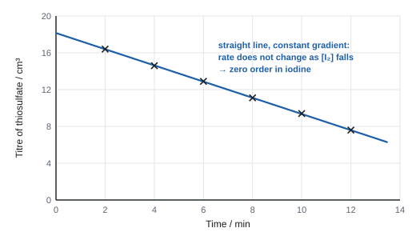
9a Variables and safety
- IV: time. DV: titre (∝ [I₂]). Control: temperature (water bath), sample volume (pipette), concentrations of thiosulfate and NaHCO₃.
- Propanone: flammable, no naked flames. Iodine solution: harmful, stains; gloves. Sulfuric acid: irritant at this concentration; goggles.
9a Processing the results
- Straight line with a negative gradient → rate doesn't change as [I₂] falls → zero order with respect to I₂.
- Doubling [propanone] doubles the gradient, and doubling [H⁺] doubles it too, so:
- Iodine is not in the rate equation, so it reacts after the rate-determining step. The slow step involves propanone and H⁺ (acid-catalysed formation of the enol); iodine then reacts quickly with the enol.
Worked example: rate from the titre–time graph
Samples of 10.0 cm³ were titrated with 0.0100 mol dm⁻³ Na₂S₂O₃. Titres: 16.4 cm³ at 2 min and 7.6 cm³ at 12 min (on the straight line).
gradient = (7.6 − 16.4) ÷ (12 − 2) = −0.88 cm³ min⁻¹
thiosulfate per minute = 0.88/1000 × 0.0100 = 8.8 × 10⁻⁶ mol min⁻¹ → I₂ = 4.4 × 10⁻⁶ mol min⁻¹ (ratio 1 : 2)
in 10.0 cm³: rate = 4.4 × 10⁻⁶ ÷ 0.0100 dm³ = 4.4 × 10⁻⁴ mol dm⁻³ min⁻¹ = 7.3 × 10⁻⁶ mol dm⁻³ s⁻¹
9b Aim and principle: the clock reaction
The Harcourt–Esson reaction between peroxodisulfate and iodide:
- A small, fixed amount of thiosulfate and some starch are in the mixture. The thiosulfate reacts with the iodine as fast as it forms, so the colour change is delayed.
- When all the thiosulfate is used up, free I₂ appears and turns the starch blue-black suddenly. The time t is recorded.
- The same amount of iodine has formed by time t in every run, so rate ∝ 1/t.
- This is only an initial rate if very little reactant has been used by time t, i.e. the thiosulfate is small compared with the other reactants, so the rate is almost constant during the timed period.
Other clocks you may meet use the same idea: H₂O₂ + 2I⁻ + 2H⁺ → I₂ + 2H₂O with thiosulfate and starch; or bromate(V) + bromide + acid making Br₂, with phenol removing the Br₂ until it is used up, after which the Br₂ bleaches methyl red (see CP10).
Core practical 9b: method in brief
- Using burettes, put into a beaker: 10.0 cm³ KI(aq), 5.0 cm³ Na₂S₂O₃(aq), 2.0 cm³ starch, and water so that the total volume is always the same.
- Put 10.0 cm³ of K₂S₂O₈(aq) in a separate boiling tube (both at the same temperature).
- Pour the peroxodisulfate in, mix, and start the clock. Stop it when the blue-black colour appears. Record the temperature.
- Repeat with 5, 15, 20, 25 cm³ of KI(aq), changing the water to keep the total volume constant.
- Then keep [I⁻] fixed and vary the volume of K₂S₂O₈(aq) the same way.
- Plot 1/t against volume of the reactant varied.
9b Variables and safety
- IV: volume (∝ concentration) of one reactant. DV: time to colour change (1/t ∝ rate). Control: total volume (add water), volume of thiosulfate and starch, temperature (water bath), concentration of the other reactant.
- A burette (or graduated pipette) is used for the small, different volumes so the total volume is exact; a measuring cylinder is too inaccurate.
- Potassium peroxodisulfate is an oxidising solid and can cause skin and breathing sensitisation; avoid contact and dust. Low concentrations of the others are low hazard.
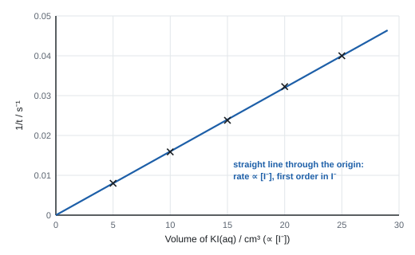
Worked example: order from a clock reaction
Total volume 50.0 cm³ in every run. KI(aq) is 0.200 mol dm⁻³.
| Volume KI / cm³ | 5.0 | 10.0 | 15.0 | 20.0 | 25.0 |
|---|---|---|---|---|---|
| t / s | 125 | 63 | 42 | 31 | 25 |
| 1/t / s⁻¹ | 0.0080 | 0.0159 | 0.0238 | 0.0323 | 0.0400 |
Doubling the volume from 5.0 to 10.0 cm³ halves t, so 1/t (the rate) doubles. The graph of 1/t against volume is a straight line through the origin, so rate ∝ [I⁻]: first order in I⁻.
[I⁻] in the 10.0 cm³ run = 0.200 × 10.0 ÷ 50.0 = 0.0400 mol dm⁻³ (calculate it; don't read it off the table).
If the peroxodisulfate runs give the same result: rate = k[S₂O₈²⁻][I⁻], second order overall.
Errors and improvements (9a and 9b)
- Judging the colour change by eye is subjective: use a light sensor or colorimeter, or a white tile behind the beaker.
- Temperature drifts: use a water bath; bring both solutions to temperature before mixing; record the temperature of each mixture.
- Clock: the start time is uncertain if mixing is slow; pour quickly from a boiling tube.
- 9a: the time of quenching is uncertain (half the pipette); NaHCO₃ quench must be immediate; if titrating is delayed and quenching is incomplete, iodine keeps reacting and titres come out too small.
- A very short t (under ~10 s) has a large percentage uncertainty: use more dilute solutions.
- 9a: "acid and propanone in (large) excess so only [I₂] changes" (not "iodine is limiting"); NaHCO₃ "neutralises/removes the H⁺ catalyst, so the reaction stops"; "titre is proportional to the concentration of iodine"; "straight line, so zero order"; rate equation with k: rate = k[CH₃COCH₃][H⁺].
- 9b: thiosulfate "reacts with the iodine as it forms" + "so the colour change is delayed". Not "slows the reaction", not "a catalyst", not "quenches".
- "Total volume constant, so volume is proportional to concentration."
- "1/t is proportional to rate because the same amount of iodine forms each time"; valid only when the amount of thiosulfate is small so the rate is nearly constant.
- Starch colour in a forward clock: "colourless to blue-black".
Often asked as: why the quench works; why the reactants are in excess; plot titre or 1/t and deduce the order; calculate [I⁻] in a mixture; write the rate equation; find half-lives on a given graph; name two control variables; why a burette, not a cylinder; why the rate is taken as 1/t.
Leaving k out of the rate equation, or putting [I₂] in it.
Saying the overall order from data where one reactant (water, OH⁻, H⁺) was in large excess: you can only find the order for the reactant that changed.
Reading [I⁻] off the table instead of calculating it from volume × concentration ÷ total volume.
Measuring a second half-life from t = 0, so the two look different.
- Other quenches: propanone added to slow (not stop) a haloalkane hydrolysis, which is why titrations must be done straight away (WCH16 Jan 2023); KI added to use up MnO₄⁻ in a sample, then the I₂ titrated (WCH16 Jun 2024); ice to slow an ester hydrolysis (WCH16 Oct 2022).
- Autocatalysis by Mn²⁺ in the MnO₄⁻/ethanedioate reaction: the concentration–time curve is slow, then fast, then slow, so it must be drawn as a smooth S-shaped curve, not a straight line (WCH16 Jun 2024).
- Ester hydrolysis followed by titrating the acid formed: plot (V∞ − Vt), which is proportional to the concentration of the ester; constant half-life → first order (WCH16 Oct 2022).
- Continuous monitoring with a colorimeter of a fading dye; OH⁻ in large excess so only the order in the dye can be found (WCH16 Jan 2025).
SpecCP10Finding the activation energy of a reaction
Measure the rate of a reaction at several temperatures and use an Arrhenius plot (ln k or ln 1/t against 1/T) to find the activation energy.
Aim and principle
- A graph of ln k against 1/T is a straight line with gradient = −Ea/R. R = 8.31 J mol⁻¹ K⁻¹; T in kelvin.
- In a clock reaction the same amount of reaction happens by time t at every temperature, so k ∝ 1/t. Plot ln(1/t) against 1/T: the gradient is the same.
- The usual reaction is bromate(V) with bromide in acid:
A fixed amount of phenol reacts with the bromine as it forms. Once the phenol is used up, free bromine bleaches the methyl red indicator. Time t is from mixing until the red colour disappears. (Your school may use another clock, such as peroxodisulfate–iodide, or CaCO₃ + HCl timed until the solid disappears; the analysis is the same.)
Core practical 10: method in brief
- In one boiling tube put fixed volumes of KBr/KBrO₃ solution, phenol solution and methyl red (from burettes). In a second tube put a fixed volume of dilute H₂SO₄.
- Stand both tubes in a water bath at about 20 °C until both reach the bath temperature (check with a thermometer).
- Pour the acid into the first tube, start the clock, mix, keep in the bath. Stop the clock when the red colour disappears. Record the temperature of the mixture.
- Repeat at about 30, 40, 50 and 60 °C, using the same volumes each time.
- Calculate 1/T (T in K) and ln(1/t). Plot ln(1/t) against 1/T, draw the best-fit line and find the gradient.
- Ea = −gradient × R.
Variables and safety
- IV: temperature. DV: time t (rate ∝ 1/t). Control: volumes and concentrations of every solution (same total volume), amount of phenol and indicator.
- Phenol is corrosive and toxic by skin absorption: wear gloves. Bromine formed is toxic: use small amounts, ventilate. Hot water bath: take care.
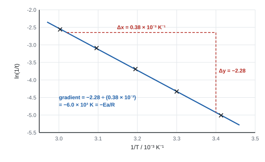
Worked example: Arrhenius graph gradient → Ea
| T / °C | 20 | 30 | 40 | 50 | 60 |
|---|---|---|---|---|---|
| T / K | 293 | 303 | 313 | 323 | 333 |
| t / s | 150 | 76 | 40 | 22 | 13 |
| 1/T / 10⁻³ K⁻¹ | 3.41 | 3.30 | 3.19 | 3.10 | 3.00 |
| ln(1/t) | −5.01 | −4.33 | −3.69 | −3.09 | −2.56 |
Two points on the best-fit line: (3.02 × 10⁻³, −2.65) and (3.40 × 10⁻³, −4.93)
gradient = (−4.93 − (−2.65)) ÷ ((3.40 − 3.02) × 10⁻³) = −2.28 ÷ (0.38 × 10⁻³) = −6.0 × 10³ K
Ea = −gradient × R = 6.0 × 10³ × 8.31 = 49 900 J mol⁻¹ = +49.9 kJ mol⁻¹ (≈ +50 kJ mol⁻¹)
Check: Ea must be positive. A negative answer means a sign slip.
Worked example: two-point method (no graph)
t = 150 s at 293 K and t = 40 s at 313 K. Take k ∝ 1/t.
Write ln k = −Ea/RT + ln A for each and subtract, so ln A cancels:
ln(k₂/k₁) = (Ea/R)(1/T₁ − 1/T₂)
ln(150/40) = 1.322; 1/293 − 1/313 = 3.4130 × 10⁻³ − 3.1949 × 10⁻³ = 2.181 × 10⁻⁴ K⁻¹
Ea = 8.31 × 1.322 ÷ (2.181 × 10⁻⁴) = 50 400 J mol⁻¹ = +50.4 kJ mol⁻¹
Keep 1/T unrounded: rounding 1/T to 3 s.f. here changes Ea a lot.
Errors and improvements
- Temperature falls while the reaction runs (especially at 60 °C): keep the tube in the bath; record the temperature at the start and end and use the mean.
- Judging when the colour disappears: same white background; a colorimeter or light sensor.
- Both solutions must be at the bath temperature before mixing.
- At high temperature t is short, so its percentage uncertainty is large; at low temperature the reaction is slow but fine.
- More temperatures give a more reliable line.
- "Plot ln(1/t) (or ln k, ln rate) against 1/T"; "find the gradient"; "Ea = −gradient × R" (multiply by 8.31). "ln 1/T" or "1/t against T" is not credited.
- Answer: positive, with units kJ mol⁻¹ (or J mol⁻¹), 2–3 s.f.
- "1/t is a measure of the rate because the same amount of reaction has taken place (same amount of phenol / CaCO₃ used up)".
- "Burette (not measuring cylinder) for small volumes so the total volume is constant." "Water-bath temperature checked in both tubes before mixing."
Often asked as: complete a table of 1/T and ln(1/t); plot the Arrhenius graph and find Ea from the gradient; Ea from two temperatures; explain how the graph gives Ea; why phenol is needed; suggest an improvement to temperature control; hazard of phenol.
Using °C instead of K. Using log₁₀ instead of ln.
Ea = gradient × R (gives a negative Ea). Leaving out "per mole" in the unit.
Using the two separate equations and getting two different Ea values instead of subtracting them.
Treating the constant term in a given equation as if it were k.
- The intercept on an ln k against 1/T graph is ln A at 1/T = 0, far off the left of any real graph, so a suggested value of A can't be checked from the plotted data (WCH16 Jan 2025).
- CaCO₃ + HCl timed until the solid disappears: HCl in large excess (show by moles) so its concentration is effectively constant, and the same mass of CaCO₃ reacts each time (WCH16 Oct 2025).
SpecCP11Finding the Ka value for a weak acid
Find Ka of a weak acid (e.g. ethanoic acid) by measuring the pH of a half-neutralised solution, using a titration to find the equivalence volume.
Aim and principle
- When the acid is half-neutralised, [CH₃COOH] = [CH₃COO⁻], so they cancel: Ka = [H⁺], i.e. pKa = pH.
- So: find the equivalence volume by titration, make a half-neutralised solution, measure its pH with a calibrated pH meter, then Ka = 10⁻ᵖᴴ.
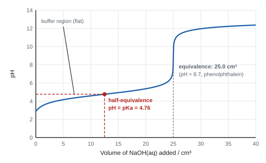
Core practical 11: method in brief
- Calibrate the pH meter with buffer solutions of known pH (e.g. pH 4 and pH 7). Rinse the probe with distilled water between solutions.
- Pipette 25.0 cm³ of the weak acid into a conical flask, add phenolphthalein and titrate with NaOH(aq) from a burette until the first permanent pink. Repeat to concordant titres. Mean titre = V.
- Pipette a fresh 25.0 cm³ of acid and add exactly V/2 of NaOH from the burette. (Or: neutralise 25.0 cm³ exactly, then add a further 25.0 cm³ of the acid.) Either way, [HA] = [A⁻].
- Measure the pH of this half-neutralised solution. pKa = pH; Ka = 10⁻ᵖᴴ.
- Alternative: add NaOH in 1 cm³ portions (smaller near the end-point), recording pH each time; plot pH against volume; read the pH at half the equivalence volume.
Variables and safety
- Measured: titre V, pH. Control: temperature (Ka depends on temperature), same acid sample, calibrated meter.
- NaOH(aq) is corrosive/irritant to eyes: goggles. Ethanoic acid at this concentration is an irritant.
Processing the results
Worked example: Ka from the half-neutralisation pH
25.0 cm³ of ethanoic acid needs 25.0 cm³ of NaOH(aq). A fresh 25.0 cm³ with 12.5 cm³ of NaOH has pH 4.76.
pKa = pH = 4.76
Ka = 10⁻⁴·⁷⁶ = 1.74 × 10⁻⁵ mol dm⁻³
Cross-check from the pH of the acid alone: 0.100 mol dm⁻³ acid has pH 2.88, so [H⁺] = 10⁻²·⁸⁸ = 1.32 × 10⁻³ mol dm⁻³.
Assuming [H⁺] = [A⁻] and [HA] ≈ 0.100: Ka = (1.32 × 10⁻³)² ÷ 0.100 = 1.74 × 10⁻⁵ mol dm⁻³
Errors and improvements
- pH meter not calibrated or not rinsed: systematic error. Calibrate with two buffers either side of the expected pH.
- End-point judged imprecisely, so V/2 is not exactly half: repeat to concordant titres; add NaOH dropwise near the end.
- Temperature different from 25 °C: Ka changes; record it.
- In the pH-curve method, use smaller additions near the end-point so the equivalence volume isn't missed.
- "pKa = pH when the acid is half-neutralised" because "[HA] = [A⁻]"; "Ka = 10⁻ᵖᴴ".
- Method points: titrate to find the end-point volume with an indicator; add half that volume to a fresh sample of acid (same volume); measure the pH with a pH meter.
- "Pipette for the 20.0/25.0 cm³ of acid"; "rinse the burette with NaOH"; "smaller portions near the end-point".
- Explanations of how to do the calculation are not needed in a method answer.
Often asked as: outline a method to find Ka; why pH = pKa at half-neutralisation; calculate Ka from a pH; read pKa from a pH curve; choose an indicator; suggest why the value differs from the data book.
Measuring the pH at the equivalence point instead of at half-neutralisation.
Saying "pH = pKa" without describing how you make the half-neutralised solution.
Using an uncalibrated meter, or universal indicator paper, to measure a pH to 2 d.p.
- For the first Ka of a diprotic acid (ethanedioic acid), the first end-point is at low pH, so phenolphthalein would show the second end-point instead; use a pH probe and the first half-equivalence point (WCH16 Oct 2024).
- Saturated Ca(OH)₂ left for a day to reach equilibrium, filtered and titrated with HCl to find [OH⁻] and Kc (WCH16 Jun 2025).
SpecCP12Investigating some electrochemical cells
Set up cells from two half-cells joined by a salt bridge, measure the cell emf with a high-resistance voltmeter, and compare it with the value from standard electrode potentials.
Aim and principle
- A half-cell is a metal in a solution of its ions (Zn | Zn²⁺), or platinum in a solution containing both oxidation states of an ion (Pt | Fe³⁺, Fe²⁺).
- Two half-cells are joined by a wire through a high-resistance voltmeter and a salt bridge. The salt bridge lets ions move to complete the circuit without mixing the solutions.
- E⦵cell = E⦵(more positive, reduction) − E⦵(less positive, oxidation). It must come out positive for the feasible direction.
- Standard conditions: 1.00 mol dm⁻³ solutions, 298 K, gases at 100 kPa (1 atm).
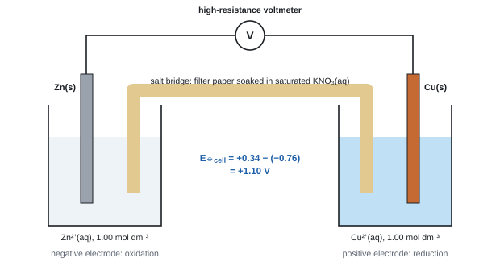
Core practical 12: method in brief
- Clean the metal strips with emery paper (remove the oxide layer), then rinse.
- Half-fill two beakers with 1.00 mol dm⁻³ solutions (e.g. ZnSO₄ and CuSO₄) and put each metal in its own solution.
- Make a salt bridge: a strip of filter paper soaked in saturated KNO₃(aq), dipping into both solutions.
- Connect the metals to a high-resistance voltmeter with leads and crocodile clips. Record the reading (it should be steady).
- Repeat with other pairs (e.g. Cu/Ag, Zn/Fe, Cu with Fe³⁺/Fe²⁺ using a platinum electrode). Use a fresh salt bridge each time.
- Compare each measured emf with E⦵cell from the data booklet.
Why each choice
- High-resistance voltmeter: almost no current flows, so you measure the maximum potential difference (the emf).
- KNO₃: its ions are soluble, don't react with the electrodes or solutions and don't form precipitates. KCl is unsuitable with Ag⁺ (white AgCl forms); KOH is wrong (forms hydroxide precipitates).
- Platinum: inert, conducts, and gives a surface for the electron transfer between Fe³⁺ and Fe²⁺.
Worked example: cell emf and cell diagram
E⦵ data: Zn²⁺/Zn −0.76 V; Cu²⁺/Cu +0.34 V; Fe³⁺/Fe²⁺ +0.77 V.
(a) Zinc–copper: E⦵cell = +0.34 − (−0.76) = +1.10 V
Cell diagram: Zn(s) | Zn²⁺(aq) ‖ Cu²⁺(aq) | Cu(s)
Overall: Zn(s) + Cu²⁺(aq) → Zn²⁺(aq) + Cu(s)
(b) Copper with Fe³⁺/Fe²⁺: E⦵cell = +0.77 − (+0.34) = +0.43 V
Cell diagram: Cu(s) | Cu²⁺(aq) ‖ Fe³⁺(aq), Fe²⁺(aq) | Pt(s)
Overall: Cu(s) + 2Fe³⁺(aq) → Cu²⁺(aq) + 2Fe²⁺(aq). E⦵ is not doubled when the half-equation is doubled.
Variables, safety and errors
- Control: concentration (1.00 mol dm⁻³), temperature, clean electrodes.
- Hazards: CuSO₄ and AgNO₃ are harmful/irritant and toxic to aquatic life: dispose of as directed, not down the sink. AgNO₃ stains skin: gloves.
- Why measured values differ from the data booklet: concentrations not exactly 1.00 mol dm⁻³; temperature not 298 K; oxide on the metal; resistance of the salt bridge; a small current flowing.
- "(High-resistance) voltmeter" (not "voltameter", not a power supply).
- "Salt bridge: filter paper soaked in (saturated) potassium nitrate solution" (or KCl, NaNO₃ where no precipitate forms). KOH is wrong.
- "Platinum electrode" for a half-cell with two aqueous ions.
- Overall equation with a single arrow; E⦵cell with sign and V.
Often asked as: label a cell diagram; spot three mistakes (power supply instead of voltmeter, wire instead of salt bridge, iron instead of platinum); calculate E⦵cell; write the cell diagram and overall equation; say why KNO₃ and why a high-resistance voltmeter; explain why the measured emf differs from E⦵cell.
Doubling E⦵ for a half-equation multiplied by two.
Using a wire as a salt bridge, or replacing both metals with platinum.
A negative E⦵cell for the cell as set up: subtract the less positive from the more positive.
- Predicting feasibility from E⦵, then explaining why a reaction "predicted not to happen" does: non-standard conditions, e.g. CuI precipitating removes Cu⁺ and shifts the equilibrium (WCH16 Jun 2022).
SpecCP13Redox titrations: iron(II) with manganate(VII) (13a) and thiosulfate with iodine (13b)
13a: titrate iron(II) ions with acidified potassium manganate(VII). 13b: titrate iodine with sodium thiosulfate using starch. Use the results in multi-step calculations.
13a Aim and principle
- MnO₄⁻ : Fe²⁺ = 1 : 5 (Mn goes +7 → +2, gaining 5 electrons; each Fe²⁺ loses 1).
- Self-indicating: purple MnO₄⁻ is decolourised while Fe²⁺ remains; the end-point is the first permanent pale pink (the first drop of excess MnO₄⁻).
- Acidify with excess dilute sulfuric acid. HCl is oxidised by MnO₄⁻ (titre too large); HNO₃ is itself an oxidising agent. Too little acid → brown MnO₂.
Core practical 13a: method in brief
- Weigh the iron(II) sample (e.g. iron tablets or ammonium iron(II) sulfate) and dissolve it in dilute sulfuric acid; make up to 250.0 cm³ (or 100.0 cm³) in a volumetric flask with washings; invert to mix.
- Pipette 25.0 cm³ into a conical flask and add about 10 cm³ of dilute H₂SO₄ (measuring cylinder; it is in excess).
- Titrate with KMnO₄(aq) from the burette, swirling, until a pale pink colour stays (permanent for ~30 s).
- Rough titration, then accurate ones to concordant titres.
Worked example: iron in an iron tablet
One tablet (0.650 g) is dissolved in dilute H₂SO₄ and made up to 100.0 cm³. 25.0 cm³ portions need a mean of 29.50 cm³ of 0.00200 mol dm⁻³ KMnO₄.
n(MnO₄⁻) = 0.00200 × 29.50/1000 = 5.90 × 10⁻⁵ mol
n(Fe²⁺) in 25.0 cm³ = 5 × 5.90 × 10⁻⁵ = 2.95 × 10⁻⁴ mol
n(Fe²⁺) in 100.0 cm³ = 2.95 × 10⁻⁴ × 4 = 1.18 × 10⁻³ mol (scale factor is ×4 here, not ×10)
mass of iron = 1.18 × 10⁻³ × 55.8 = 0.0658 g = 65.8 mg per tablet (10.1 % by mass)
13b Aim and principle
- Used to find oxidising agents: the oxidant is added to excess KI, which it oxidises to I₂; the iodine is then titrated with standard thiosulfate.
- Examples: IO₃⁻ + 5I⁻ + 6H⁺ → 3I₂ + 3H₂O (IO₃⁻ : S₂O₃²⁻ = 1 : 6); 2Cu²⁺ + 4I⁻ → 2CuI + I₂ (Cu²⁺ : S₂O₃²⁻ = 1 : 1).
- Indicator: starch, added when the iodine colour has faded to pale yellow (straw); end-point blue-black → colourless. With copper, the off-white CuI precipitate stays, so the end-point mixture looks white/cream.
Core practical 13b: method in brief (copper in brass)
- Weigh the brass. In a fume cupboard, dissolve it in concentrated nitric acid (brown NO₂ forms; the solution goes blue-green).
- Dilute, cool, then add Na₂CO₃(aq) slowly until a faint permanent precipitate forms (the acid is neutralised); add ethanoic acid dropwise until it just clears.
- Transfer with washings into a 250.0 cm³ volumetric flask, make up to the mark, invert.
- Pipette 25.0 cm³ into a conical flask; add about 10 cm³ of KI(aq) (excess, so a measuring cylinder is fine). A white precipitate (CuI) forms in a brown iodine solution.
- Titrate with 0.100 mol dm⁻³ Na₂S₂O₃ until pale yellow, add starch (blue-black), continue dropwise until the blue-black colour just disappears.
Worked example: percentage of copper in brass
1.75 g of brass is dissolved and made up to 250.0 cm³. 25.0 cm³ portions with excess KI need a mean titre of 17.60 cm³ of 0.100 mol dm⁻³ Na₂S₂O₃.
n(S₂O₃²⁻) = 0.100 × 17.60/1000 = 1.760 × 10⁻³ mol
2Cu²⁺ → I₂ → 2S₂O₃²⁻, so n(Cu²⁺) in 25.0 cm³ = 1.760 × 10⁻³ mol
n(Cu) in 250.0 cm³ = 1.760 × 10⁻² mol
mass Cu = 1.760 × 10⁻² × 63.5 = 1.118 g
% Cu = 1.118 ÷ 1.75 × 100 = 63.9 %
Variables, safety and errors (13a and 13b)
- Hazards: conc HNO₃ corrosive → gloves; NO₂ toxic → fume cupboard; KMnO₄ oxidising and harmful, stains; dilute H₂SO₄ irritant.
- Cool before adding Na₂CO₃: the neutralisation is vigorous and the solution could froth over.
- Errors: unneutralised HNO₃ oxidises I⁻ → titre too high → % Cu too high. Starch added too early → iodine–starch complex, end-point unclear. Not enough acid in 13a → MnO₂ forms, titre wrong. Air oxidising Fe²⁺ before titrating → titre too small.
- 13a: "dilute sulfuric acid"; "permanent pale pink" (not "pink to colourless", not purple); "no indicator needed because MnO₄⁻ is self-indicating"; HCl "is oxidised by MnO₄⁻ (to Cl₂)".
- 13b: starch "near the end-point / when the solution is pale yellow"; "blue-black to colourless"; "KI in excess, so a measuring cylinder is accurate enough".
- Calculations: n = cV/1000; correct ratio (5 : 1, 1 : 1, 5 : 2); ×10 (or the right scale factor); Ar Cu 63.5, Fe 55.8; answer to 2–3 s.f.
Often asked as: 4–6 mark titration calculations (iron, copper in brass, hydrated ethanedioic acid); why H₂SO₄ and not HCl or HNO₃; end-point colours; why starch is added late; why the nitric acid must be neutralised; three techniques for accurate burette readings; effect of a named error on the result.
Forgetting the scale factor for the aliquot, or doubling 63.5 for copper.
Giving a black or brown end-point, or "pink to colourless" for MnO₄⁻ in the burette.
"Nitric acid reacts with copper" as the reason for neutralising: the point is that HNO₃ would oxidise iodide to extra iodine.
- Back titration of chlorate(V) with excess Fe²⁺, the leftover Fe²⁺ titrated with MnO₄⁻; Cl⁻ left in the flask also uses up MnO₄⁻, making the calculated chlorate lower (WCH16 Jan 2021).
- Vanadium(V) reduced by zinc or tin, then titrated back up with MnO₄⁻; tin left in the flask also reduces MnO₄⁻, so the titre is too large (WCH16 Jan 2024).
- Equation for brass dissolving: Zn + 4HNO₃ → Zn(NO₃)₂ + 2NO₂ + 2H₂O (WCH16 Oct 2021).
SpecCP14The preparation of a transition-metal complex
Prepare a transition-metal complex by ligand exchange, isolate and purify the crystals, and calculate the percentage yield.
Aim and principle
The usual example is tetraamminecopper(II) sulfate-1-water. Excess ammonia replaces four water ligands around Cu²⁺ (ligand exchange):
- First a pale blue precipitate of Cu(OH)₂ forms (deprotonation by the first drops of NH₃); in excess it dissolves to a deep blue solution.
- The complex is much less soluble in aqueous ethanol than in water, so adding ethanol makes it crystallise.
Core practical 14: method in brief
- Weigh about 2.5 g of CuSO₄·5H₂O into a beaker; dissolve in the minimum of distilled water (a few cm³).
- In a fume cupboard, add concentrated ammonia solution (about 5 cm³, measuring cylinder) with stirring: pale blue precipitate, then a deep blue solution.
- Slowly add about 8 cm³ of ethanol; cool in an ice bath. Deep blue crystals form.
- Collect by suction filtration. Wash with a little ice-cold ethanol.
- Dry on filter paper or in a desiccator. Weigh and calculate the percentage yield.
Why each step
- Measuring cylinders are fine: the volumes are approximate and the ammonia is in excess.
- Fume cupboard: conc NH₃ gives off toxic, corrosive ammonia gas.
- Ethanol: lowers the solubility of the complex, so more crystallises.
- Cold ethanol wash: removes soluble impurities (unreacted CuSO₄, excess NH₃) without dissolving the product; ethanol also evaporates quickly so the crystals dry fast.
Safety
- Conc NH₃: corrosive, irritating vapour → fume cupboard, gloves.
- Ethanol: flammable → no naked flames.
- Copper(II) sulfate: harmful, environmental hazard → don't pour down the sink.
Worked example: percentage yield
2.50 g of CuSO₄·5H₂O (Mr 249.6) gave 1.98 g of [Cu(NH₃)₄]SO₄·H₂O (Mr 245.6).
n(CuSO₄·5H₂O) = 2.50 ÷ 249.6 = 0.01002 mol = n(complex), 1 : 1
theoretical mass = 0.01002 × 245.6 = 2.460 g
% yield = 1.98 ÷ 2.460 × 100 = 80.5 %
A "yield" over 100 % means the crystals were still damp. Inverting the ratio, or skipping the Mr conversion and dividing the two masses, scores nothing.
Errors and improvements
- Low yield: product left dissolved in the filtrate (too much water at the start, or warm ethanol for washing); losses on transfer.
- Crystals contaminated with CuSO₄: wash properly with cold ethanol.
- Dry to constant mass before weighing.
- "Deep/dark blue solution" (not just "blue").
- "Product is less soluble in (aqueous) ethanol than in water, so it crystallises."
- "Wash with cold ethanol to remove soluble impurities"; "cold so the product does not dissolve".
- "Measuring cylinder: approximate volumes / NH₃ in excess, so the accuracy of a pipette isn't needed."
- Yield > 100 %: "damp crystals" (not "hydrated salt").
Often asked as: observations on adding NH₃; why ethanol; why a fume cupboard; draw the suction-filtration apparatus; why the washing solvent is cold; calculate the percentage yield using both Mr values; explain a yield over 100 %.
"Blue solution" for the ammine complex: it must be deep or dark blue.
"Wash the crystals" without saying what the wash removes.
Writing the complex as [Cu(NH₃)₆]²⁺.
- Vanadium oxidation states: ammonium vanadate(V) reduced by zinc in acid, flask loosely plugged with cotton wool to keep air out but let hydrogen escape; colours yellow → green → blue → green → violet (WCH16 Jan 2024).
- Cobalt complexes: pink [Co(H₂O)₆]²⁺ to blue [CoCl₄]²⁻ with conc HCl; Co²⁺ with a little NH₃ gives a blue precipitate by deprotonation, not ligand exchange (WCH16 Oct 2022).
SpecCP15Analysis of some inorganic and organic unknowns
Carry out tests on unknown substances, record the observations, and use them (with any other data) to identify the ions or functional groups present.
Aim and approach
This practical is the source of Q1 and often Q2 on every WCH16 paper. The tests and observations are all in P5 above. In the lab, and in the exam, work in this order:
- Look: colour of the solid or solution (blue → Cu²⁺; green → Fe²⁺, Cr³⁺, Ni²⁺; pink → Co²⁺; yellow-brown → Fe³⁺; orange → Cr₂O₇²⁻; purple → MnO₄⁻).
- Cation: NaOH(aq) drop by drop, then in excess; then NH₃(aq) the same way on a fresh sample. Flame test for s-block metals. Warm with NaOH for NH₄⁺.
- Anion: dilute acid (effervescence → carbonate); HNO₃ + AgNO₃ (halide), then NH₃ to confirm; HCl + BaCl₂ (sulfate).
- Organic: test each functional group, then use spectra (IR → groups; MS → Mr and fragments; NMR → environments, ratios, neighbours).
Core practical 15: how to record tests
Use three columns: Test (reagent, how much, conditions) → Observation (what you saw: colour, ppt or solution, gas, smell) → Inference (what it shows, with formula).
Add reagents dropwise with a teat pipette, shake, then add excess.
Use a fresh sample for each test, and test gases at the mouth of the tube.
Worked example: identifying an inorganic salt
| Test | Observation | Inference |
|---|---|---|
| look at the solution | pale green | Fe²⁺ (or Cr³⁺, Ni²⁺) |
| NaOH(aq), then excess | green ppt, insoluble in excess; turns brown at the surface on standing | Fe(OH)₂ oxidised to Fe(OH)₃: Fe²⁺ |
| dilute HNO₃ then AgNO₃(aq) | no change | no Cl⁻, Br⁻ or I⁻ |
| dilute HCl then BaCl₂(aq) | white ppt | SO₄²⁻ (BaSO₄) |
Conclusion: iron(II) sulfate, FeSO₄. (If you give a name and a formula, both must be right.)
Worked example: identifying an organic compound, C₄H₈O
| Evidence | Deduction |
|---|---|
| Brady's reagent: orange ppt | C=O present (aldehyde or ketone) |
| Tollens' reagent, warm: no change | not an aldehyde, so a ketone |
| iodine/NaOH, warm: pale yellow ppt | CH₃CO– group (methyl ketone) |
| IR: strong peak at 1715 cm⁻¹ | C=O (ketone, 1720–1700 cm⁻¹) |
| MS: m/z 72 (M⁺), 43 | Mr 72; CH₃CO⁺ fragment |
| ¹H NMR: 3 peaks, ratio 3 : 3 : 2: triplet, singlet, quartet | CH₃ next to CH₂ (triplet), isolated CH₃ (singlet), CH₂ next to CH₃ (quartet) |
Structure: CH₃COCH₂CH₃, butanone.
- "If name and formula are both given, both must be correct"; the oxidation state must be in a name (iron(II)); charges must be on complex ions.
- "precipitate / ppt / solid" accepted; shades of colour usually ignored; "no change", not "no observation" (penalised once).
- Distinguish questions: one reagent, then the result for each compound. The result mark depends on the reagent mark.
- "Justify": each test linked to the group it shows; each spectrum feature linked to part of the structure.
Often asked as: name or formula of ions A–D from a results table; complete missing observations; deduce a structure from tests plus IR, MS and NMR; choose a test to tell two compounds apart; write ionic equations for precipitates; state the type of reaction.
Reading cobalt (Co) as copper (Cu): check the symbol you write.
Giving several answers where one is asked: a wrong extra answer cancels the right one.
"Amide" or "ammine" when you mean amine; writing –COH for an aldehyde.
Answering about a different sample from the one the question tested.
- Combustion analysis train: anhydrous CaCl₂ (absorbs H₂O) before soda lime (absorbs CO₂); then the empirical formula from the mass gains (WCH16 Jun 2021).
- A sooty flame on burning suggests an aromatic ring or high C : H ratio (WCH16 Jan 2025).
- Brady's derivative recrystallised and its melting point matched against a data table to identify the carbonyl compound (WCH16 Jun 2022).
SpecCP16The preparation of aspirin
Prepare aspirin from 2-hydroxybenzoic acid and ethanoic anhydride, purify it by recrystallisation and check its purity by melting temperature; apply the same techniques to other organic preparations.
Aim and principle
- The phenol –OH of 2-hydroxybenzoic acid is esterified by ethanoic anhydride. A few drops of concentrated sulfuric (or phosphoric) acid act as a catalyst.
- Ethanoic anhydride is used in excess so all the (more expensive) 2-hydroxybenzoic acid reacts.
- Adding cold water at the end hydrolyses the excess anhydride to ethanoic acid (which stays in solution) and makes the aspirin crystallise, as it is only slightly soluble in cold water.
Core practical 16: method in brief
- Weigh 2.00 g of 2-hydroxybenzoic acid into a pear-shaped flask.
- In a fume cupboard, add 5.0 cm³ of ethanoic anhydride and 5 drops of conc H₂SO₄, with the flask in cold water (mixing is exothermic). Swirl.
- Warm in a water bath at about 60–80 °C for about 15–20 minutes (or reflux), swirling.
- Cool, then carefully add cold water / crushed ice to destroy the excess anhydride and crystallise the aspirin. Cool in an ice bath.
- Collect the crude crystals by suction filtration; wash with a little ice-cold water.
- Recrystallise: dissolve in the minimum of hot ethanol (or ethanol–water), filter hot if needed, cool slowly then in ice, filter under reduced pressure, wash with ice-cold solvent, dry.
- Weigh and find the melting temperature (pure aspirin: about 136 °C).
Variables and safety
- Ethanoic anhydride: corrosive, irritating vapour (lachrymator), reacts with water → fume cupboard, gloves.
- Conc H₂SO₄: corrosive → gloves, add dropwise.
- Ethanol: flammable → water bath, no flame.
- Control for a fair yield comparison: masses, heating time and temperature, volume of solvent in recrystallisation.
Worked example: excess reagent and percentage yield
2.00 g 2-hydroxybenzoic acid (Mr 138.0); 5.0 cm³ ethanoic anhydride (density 1.08 g cm⁻³, Mr 102.0); 1.85 g of dry aspirin (Mr 180.0) obtained.
n(acid) = 2.00 ÷ 138.0 = 0.0145 mol
mass of anhydride = 5.0 × 1.08 = 5.40 g → n = 5.40 ÷ 102.0 = 0.0529 mol
Ratio is 1 : 1 and 0.0529 > 0.0145, so ethanoic anhydride is in excess.
theoretical mass aspirin = 0.0145 × 180.0 = 2.61 g
% yield = 1.85 ÷ 2.61 × 100 = 70.9 %
Errors and improvements
- Yield below 100 %: reaction incomplete; some aspirin stays dissolved in the recrystallisation solvent and the washings; losses on transfer; some aspirin hydrolysed back if heated with water too long.
- Purity: a melting range that is sharp (≈1–2 °C) and close to 136 °C. A lower, wider range means impurities (often unreacted 2-hydroxybenzoic acid). Recrystallising again improves purity but lowers the yield.
- A useful extra check (not required): iron(III) chloride solution turns purple with a phenol, so it shows up any unreacted 2-hydroxybenzoic acid; pure aspirin gives little colour.
The organic preparation family on WCH16
Every paper's last question is a preparation like this one with a new compound. The same technique set comes up each time:
| Preparation seen | Techniques asked about |
|---|---|
| esters (ethyl butanoate, methyl salicylate, phenyl benzoate) | reflux; excess by calculation; Na₂CO₃ wash in a separating funnel (release CO₂ pressure); drying agent; distil and collect the right fraction |
| nitration (methyl 3-nitrobenzoate) | ice bath, temperature below ~10–15 °C, add nitrating mixture slowly; recrystallisation; melting point |
| azo dyes (via phenylamine and a diazonium salt) | 0–10 °C, HNO₂ made in situ; coupling with a phenol in alkali; suction filtration; recrystallisation |
| phenylamine from nitrobenzene | Sn + conc HCl (reducing agent); NaOH to free the amine; steam distillation; salting out; ether extraction (hot water bath) |
| amides (phenylethanamide) | acyl chloride added slowly (vigorous, HCl given off); IR to show C=O of an amide |
| steam distillation of natural oils (limonene, lavender) | why steam distillation; which layer is the oil; drying the oil |
- Conc H₂SO₄ is a "catalyst" ("speeds up the reaction"); "provides H⁺" or "increases yield" is ignored.
- Cold water / crushed ice: "to react with (hydrolyse) the excess ethanoic anhydride" and "to crystallise the aspirin". "To quench / stop the reaction" scores 0.
- Excess: masses → moles for both reagents, then a comparison ("0.053 > 0.0145").
- Suction filtration: "faster" and "gives a drier product" (comparatives).
- Purity: "sharp melting temperature" and "close to the data-book value". Boiling temperature or yield is not a purity test.
Often asked as: why the flask is cooled when mixing; role of conc H₂SO₄; show by calculation which reagent is in excess; spot three errors in a reflux diagram; why water is added at the end; advantage of suction filtration; describe recrystallisation; test of purity; percentage yield.
Giving four or five errors when three are asked: a wrong extra one costs a mark.
"Dry product" for suction filtration: it gives a drier product.
Saying a thermometer or direct Bunsen heating is "needed" in a reflux set-up.
Using yield, or a boiling point, as evidence of purity for a solid.
- Steam distillation of limonene from orange peel: the oil is the upper layer because its density (0.85 g cm⁻³) is below water's; optical activity checked with a polarimeter (WCH16 Jun 2022).
- Recrystallisation temperature kept below the product's melting point (e.g. 60 °C for a solid melting at 70 °C) so it doesn't melt into an oil (WCH16 Jun 2025).
- Sulfonic acid group on an azo dye makes it more soluble in water, so it washes out of fabric more easily (WCH16 Oct 2024).
Quick checks
In CP2 the temperature is recorded for several minutes before and after mixing. Why?
Heat leaks in or out throughout the experiment. Extrapolating both lines to the moment of mixing estimates the temperature change there would have been with no heat exchange.
Why are samples in CP9a added to sodium hydrogencarbonate solution?
Quenching freezes the composition at the moment of sampling. Without the acid catalyst the reaction effectively stops, so the titre reflects the iodine present at that time.
An Arrhenius plot of ln(1/t) against 1/T has a gradient of −6000 K. What is the activation energy?
Ea = −gradient × R = 6000 × 8.31 = 49 900 J mol−1 = 49.9 kJ mol−1. Activation energies are always positive.
Why is ethanol added in CP14 when making tetraamminecopper(II) sulfate?
Adding a solvent in which the product is poorly soluble lowers its solubility in the mixture, so more of it crystallises and the yield rises.
In CP5, which halogenoalkane gives a precipitate fastest, and why?
The rate depends mainly on how easily the C–X bond breaks. C–I has the lowest bond enthalpy, even though it is the least polar.
A titre of 22.50 cm3 is measured with a burette read to ±0.05 cm3. What is the percentage uncertainty in the titre?
Two readings make the titre, so its uncertainty is ±0.10 cm3: 0.10 ÷ 22.50 × 100 = 0.44%. 0.22% counts only one reading.